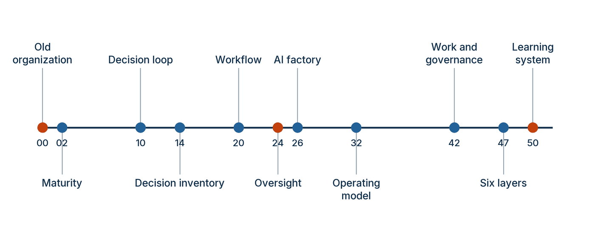

ในบทความนี้
- 1. Governance คือพวงมาลัยและเบรก ไม่ใช่กำแพง
- 2. แปดคำถาม — ตอบด้วยหลักฐาน และ Artifact ที่ถือหลักฐานนั้นไว้
- 3. แผนที่ masterclass 52 นาที — ห้าย่อหน้า สิบเอ็ดหมุดเวลา
- 4. คำถามสำหรับผู้นำ 17 ข้อ — สำรับสำหรับเวิร์กช็อปหนึ่งครั้ง
- 5. หกชั้น กับลำดับลงมือที่เริ่มแคบ
- 6. อภิธานศัพท์ 20 คำที่ทั้งทีมต้องใช้ตรงกันก่อน
- 7. ความเร็วในการเรียนรู้วัดอย่างไร และสิบรูปแบบความล้มเหลวที่ต้องเฝ้า
- 8. เส้นทางข้างหน้า — อัปเดตด้วยบันทึกลงวันที่ แล้วกลับไปเลือกหนึ่งการตัดสินใจ
In this post
- 1. Governance Is Steering and Braking, Not a Wall
- 2. The Eight Questions — Answered With Evidence, and the Artifact That Holds It
- 3. The 52-Minute Masterclass Map — Five Paragraphs, Eleven Time Marks
- 4. Seventeen Leader Prompts — A Deck for One Working Session
- 5. Six Layers, and the Sequence That Starts Narrow
- 6. The Twenty Glossary Terms a Team Must Agree On First
- 7. How Learning Velocity Is Measured, and Ten Failure Patterns to Watch
- 8. The Road Ahead — Update With a Dated Ledger, Then Go Back and Pick One Decision
🤔 ถ้าคุณอ่านมา 19 ตอน แต่ยังตอบไม่ได้ว่าองค์กรจะรู้ได้อย่างไรว่าดีขึ้น — คุณเปลี่ยนผ่านหรือยัง?
ตอนที่แล้ว #19 Days 91–180 ปิดด้วยการทบทวนวันที่ 180 และมติสี่ทาง — ขยาย ปรับรูป ระงับ หรือยุติ — ที่อ่านจากตารางคะแนนหกคอลัมน์พร้อมกัน ตอนนี้เป็นตอนสุดท้ายของซีรีส์ยี่สิบตอน และผมไม่ได้ตั้งใจให้มันเป็นบทสรุป เพราะบทสรุปคือสิ่งที่ทุกคนพยักหน้าเห็นด้วยแล้วไม่มีใครลงมือ สิ่งที่ผมอยากทิ้งไว้คือเครื่องมือสี่ชิ้นที่หยิบไปใช้ได้ในสัปดาห์หน้า — แบบประเมินแปดคำถามที่เติมด้วยหลักฐาน แผนที่เนื้อหาของ masterclass ต้นทาง สำรับคำถามสำหรับผู้นำ 17 ข้อ และการ์ดอภิธานศัพท์ที่ทำให้คนหกคนในห้องประชุมใช้คำเดียวกันหมายถึงสิ่งเดียวกัน
คำตอบหนึ่งบรรทัดของคำถามข้างบนคือ คุณเปลี่ยนผ่านแล้วก็ต่อเมื่อมี artifact ที่ระบุชื่อไฟล์ได้จริงสำหรับคำถามทั้งแปดข้อ และมีวันที่บอกได้ว่ารอบการเรียนรู้รอบล่าสุดปิดเมื่อไร ความเห็น ความมั่นใจ และสไลด์ไม่นับ ที่เหลือของบทความนี้คือวิธีตรวจสอบตัวเองตามนั้น แล้วเริ่มใหม่จากการตัดสินใจเพียงเรื่องเดียว
1. Governance คือพวงมาลัยและเบรก ไม่ใช่กำแพง
ผมอยากเปิดตอนสุดท้ายด้วยประโยคที่คู่มือใช้ปิดเรื่อง governance เพราะมันแก้ความเข้าใจผิดที่ทำให้โครงการ AI จำนวนมากเดินช้าโดยไม่ปลอดภัยขึ้นเลยแม้แต่นิดเดียว[1]
"วิดีโอยังเปรียบ Governance เป็นทั้งพวงมาลัยและระบบเบรก ไม่ใช่อุปสรรคเพียงอย่างเดียว ระบบที่ทรงพลังขยายความเสียหายได้ในสเกลเดียวกับคุณค่า จึงต้องฝัง Privacy, Security, Accountability, Human oversight และ Traceability ในสถาปัตยกรรมตั้งแต่ต้น การ Scale อย่างยั่งยืนต้องรู้ว่าใครรับผิดชอบ Decision ใดต้องมีคน ข้อมูลใดใช้ได้ และจะย้อนสร้างพร้อมเยียวยาความผิดพลาดอย่างไร"
อุปมานี้ทำงานได้ดีเพราะมันซื่อสัตย์กับทั้งสองด้าน พวงมาลัยไม่ได้ทำให้รถช้าลง มันคือสิ่งเดียวที่ทำให้การขับเร็วมีความหมาย ส่วนเบรกไม่ได้มีไว้เพื่อไม่ให้ไปถึงที่หมาย แต่มีไว้เพื่อให้เข้าโค้งได้โดยไม่ต้องชะลอตั้งแต่ทางตรง องค์กรที่มองว่า governance คือกำแพงมักได้ผลลัพธ์สองอย่างพร้อมกัน — ช้าลงจริง และไม่ปลอดภัยขึ้นจริง เพราะสิ่งที่ถูกเพิ่มเข้ามาคือขั้นตอนการอนุมัติ ไม่ใช่การควบคุมที่บังคับใช้ได้ในสถาปัตยกรรม
ประโยคข้างบนยังระบุห้าอย่างที่ต้องฝังในสถาปัตยกรรมตั้งแต่ต้น ไม่ใช่ต่อท้ายหลังปล่อยระบบ ได้แก่ Privacy, Security, Accountability, การกำกับดูแลโดยมนุษย์ (human oversight) และ Traceability สี่คำถามที่ตามมาคือกระดูกสันหลังของทั้งซีรีส์ — ใครรับผิดชอบ การตัดสินใจใดต้องมีคน ข้อมูลใดใช้ได้ และจะย้อนสร้างเหตุการณ์พร้อมเยียวยาอย่างไร ถ้าองค์กรตอบสี่ข้อนี้ไม่ได้ในหนึ่งหน้ากระดาษต่อหนึ่งระบบ สิ่งที่มีอยู่คือ policy ไม่ใช่ governance
ช่องว่างที่ตัวเลขการใช้งานไม่ได้บอก
เหตุผลที่คู่มือเล่มนี้ทุ่มน้ำหนักไปที่การออกแบบองค์กรมากกว่าการเลือกโมเดล อยู่ในตัวเลขชุดหนึ่งที่ผมยกมาตั้งแต่ตอนแรกและขอปิดท้ายด้วยตัวเลขชุดเดียวกัน รายงาน AI Index 2026 บทว่าด้วยเศรษฐกิจระบุว่า 88 เปอร์เซ็นต์ ขององค์กรที่ตอบแบบสำรวจใช้ AI ในปี 2025 และ 70 เปอร์เซ็นต์ ใช้ generative AI ในอย่างน้อยหนึ่ง business function ขณะที่การใช้ AI agent ยังอยู่ในเลขหลักเดียวเกือบทุก function[2]
ระยะห่างระหว่าง 88 กับเลขหลักเดียวคือสิ่งที่ผมเรียกว่าช่องว่างของอำนาจ องค์กรเกือบทั้งหมดเข้าถึงโมเดลแล้ว แต่จำนวนที่กล้าให้ระบบมีอำนาจกระทำจริงในขอบเขตที่ควบคุมได้ยังนับได้ด้วยนิ้วมือ ช่องว่างนี้ไม่ได้ปิดด้วยโมเดลที่เก่งขึ้น เพราะมันไม่ใช่ปัญหาความสามารถของโมเดล มันคือคำถามว่าองค์กรมีพวงมาลัยและเบรกที่ดีพอจะกล้าเหยียบคันเร่งหรือยัง — และนั่นคือเหตุผลที่ทั้งซีรีส์ใช้เวลาไปกับ contract, rails, release gate และ incident loop มากกว่าการเปรียบเทียบ benchmark
อีกด้านหนึ่งของประโยค "พวงมาลัยและเบรก" ที่คนมักลืมคือ เบรกที่ดีต้องมีระยะเบรกที่วัดได้ การพูดว่า "เรามีคนอยู่ในลูป" ไม่ใช่การควบคุม จนกว่าจะตอบได้ว่าคนคนนั้นเห็นข้อมูลอะไร มีเวลาเท่าไร มีอำนาจหยุดจริงหรือไม่ และเมื่อหยุดแล้วงานไหลไปทางไหน สี่ข้อนี้คือความต่างระหว่าง human oversight ที่เป็นบทบาทที่ออกแบบไว้ กับช่องอนุมัติเชิงพิธีกรรม ซึ่งเป็นรูปแบบความล้มเหลวที่เรากลับมาเจอกันอีกครั้งในหัวข้อ 7
2. แปดคำถาม — ตอบด้วยหลักฐาน และ Artifact ที่ถือหลักฐานนั้นไว้
คู่มือตั้งคำสัญญาไว้ตั้งแต่หน้าที่สองว่า เมื่ออ่านจบ ทีมผู้นำควรตอบคำถาม แปดข้อ ได้ด้วยหลักฐาน[1] ใน #1 Six Layers, One Spine ผมยกคำถามทั้งแปดมาพร้อมคอลัมน์ "ช่องว่าง" เพื่อให้ทีมเห็นว่าตัวเองขาดอะไร ตอนนี้ผมเปลี่ยนคอลัมน์นั้นเป็น หลักฐานที่ต้องมี และเพิ่มคอลัมน์ที่สำคัญที่สุดของทั้งซีรีส์เข้ามา — artifact ที่ถือหลักฐานนั้นไว้
เหตุผลของคอลัมน์นั้นตรงไปตรงมา หลักฐานที่ไม่มีที่อยู่จะหายไปภายในหนึ่งไตรมาส คนที่ตอบคำถามได้ในห้องประชุมวันนี้อาจย้ายทีมในเดือนหน้า และคำตอบที่อยู่ในหัวคนเดียวไม่ใช่ความสามารถขององค์กร ภาคผนวก B ของคู่มือจึงให้แบบฟอร์มพร้อมใช้แปดชิ้นที่แปลง AI-as-a-Core assurance ให้เป็นวินัยการปฏิบัติงาน — จำแนก ทำสัญญา ควบคุม ระบุเวอร์ชัน อนุญาต บันทึกร่องรอย ปล่อย และเรียนรู้[1]
| Question | หลักฐานที่ต้องมี | Artifact that carries it | Post |
|---|---|---|---|
| Q1 เรากำลังพยายามปรับปรุง Outcome ขององค์กรข้อไหน และเราจะรู้ได้เร็วแค่ไหนว่าทำได้จริง | Baseline ที่ประกาศก่อนเริ่ม สมมติฐานคุณค่า ระดับความเสี่ยงที่ยอมรับได้ และวันทบทวนครั้งแรกที่ระบุเป็นวันที่จริง | บันทึก Baseline หนึ่งหน้า ผูกกับคอลัมน์ Value ของ Board Scorecard | #1 · #3 · ตอนนี้ |
| Q2 การตัดสินใจซ้ำ ๆ ข้อใดที่สร้าง Outcome นั้น | ความถี่ คุณค่าต่อครั้ง ระดับผลกระทบ เจ้าของ และมี Feedback กลับมาหรือไม่ ครบทุกแถว | บัญชีรายการการตัดสินใจ (decision inventory) แล้วจัดลำดับเป็นพอร์ตโฟลิโอการตัดสินใจ (decision portfolio) | #2 · #5 |
| Q3 คน AI กฎเชิงกำหนด และ Tool ควรทำอะไรบ้าง | แผนที่กระบวนงานตั้งแต่ต้นจนจบ เส้นทางข้อยกเว้น กำลังรองรับ และ telemetry ของผลลัพธ์ | Artifact 5 — Decision and consequence matrix คู่กับแผนที่ Workflow ฉบับ before/after | #6 · #7 · #8 |
| Q4 โมเดลขาดไม่ได้จริง ๆ ตรงไหน และมันมีอำนาจแค่ไหน | คะแนนความขาดไม่ได้ (indispensability) คู่กับอำนาจตัดสินใจ (decision authority) ต่อชุดงานที่ประกาศไว้ ไม่ใช่ต่อทั้งระบบ | Artifact 1 — AI-core use-case classification card | #4 · #11 |
| Q5 อะไรที่เราบังคับได้เชิงโครงสร้าง และอะไรที่เราทำได้แค่ประเมิน | รายการที่แยกชัดระหว่างการรับประกันเชิงโครงสร้าง (structural guarantee) กับค่าประเมินเชิงความหมาย (semantic estimate) พร้อมเกณฑ์และเจ้าของของแต่ละข้อ | Artifact 2 — AI-core assurance contract และ Artifact 3 — Five-rail architecture map | #12 · #13 |
| Q6 ต้องมีหลักฐานอะไรบ้างก่อน Release และระหว่างใช้งานจริง | ผลจากชุดประเมินหลายแทร็ก มติของด่านอนุมัติพร้อมเหตุผล และร่องรอยที่สร้างเหตุการณ์ย้อนกลับได้ในทุกขั้นที่ระบบเดินผ่าน | Artifact 4 — Runtime context release manifest · Artifact 6 — Reconstructable trace schema · Artifact 7 — Release gate | #14 · #15 |
| Q7 ใครเป็นเจ้าของคุณค่า ความเสี่ยง ผลกระทบ ข้อยกเว้น และการเรียนรู้ | สิทธิ์ตัดสินใจที่เขียนไว้ ความเป็นเจ้าของผลิตภัณฑ์ กลไกท้าทานอิสระ และการส่งต่อปัญหาที่มีงบประมาณรองรับ | ตารางสิทธิ์ตัดสินใจของรูปแบบการดำเนินงาน (operating model) คู่กับแผนที่ข้อผูกพันชุดเดียวที่ตอบได้หลายกรอบ | #9 · #10 · #16 · #17 |
| Q8 อะไรสมควรได้ขยาย ปรับรูป หยุดชั่วคราว หรือยุติ | Board Scorecard หกคอลัมน์ที่อ่านพร้อมกัน เงื่อนไขหยุดที่ประกาศไว้ก่อน และมติที่บันทึกเป็นลายลักษณ์อักษรพร้อมวันที่ | Artifact 8 — Incident learning loop คู่กับบันทึกมติวันที่ 180 | #5 · #18 · #19 · ตอนนี้ |
วิธีใช้ตารางนี้ต่างจากตอน #1 อยู่ข้อเดียวแต่เป็นข้อชี้ขาด — คราวนี้ห้ามเติมด้วยประโยคบรรยาย ให้เติมด้วยชื่อไฟล์ ชื่อหน้าใน wiki หรือหมายเลขตั๋วงานที่เปิดดูได้ภายในสามสิบวินาที เท่านั้น ถ้าเปิดไม่ได้ ให้ปล่อยว่าง ผมเคยนั่งทำแบบนี้กับทีมที่มั่นใจว่าตอบได้ครบแปดข้อ และจบชั่วโมงนั้นด้วยช่องว่างห้าช่อง ซึ่งกลายเป็นแผนงานไตรมาสถัดไปที่คมกว่าสไลด์ยี่สิบหน้าที่เตรียมมา
อีกวิธีที่ได้ผลคือเลือก use case จริงหนึ่งตัวแล้วเดินทั้งแปดแถวกับมันเพียงตัวเดียว คู่มือใช้ผู้ช่วยคืนเงินของ Luma Commerce Thailand รหัส CX-REFUND-01 (กรณีสมมติจากหนังสือ) เป็นตัวอย่างที่ร้อยผ่านภาคผนวก B ทั้งแปดชิ้น และคู่มือกำกับไว้เองว่าค่าตัวเลขทุกค่าในกรณีนี้เป็นเพียงตัวอย่างประกอบ ไม่ใช่เกณฑ์สากล[1] ข้อดีของการเดินด้วยกรณีเดียวคือมันบังคับให้คำตอบทุกข้อสอดคล้องกัน คุณจะเถียงตัวเองไม่ออกว่าอำนาจของระบบสูงในแถว Q4 แต่หลักฐานก่อนปล่อยบางเฉียบในแถว Q6
สิ่งที่ตารางนี้ยังไม่ได้พูดคือ ใครเป็นเจ้าของเวลาระหว่างช่องว่างกับการปิดช่องว่าง ซึ่งเป็นจุดที่หลักปฏิบัติข้อหนึ่งของบทที่ 1 พูดตรงที่สุด และเป็นหลักที่ผมเลือกยกมาปิดซีรีส์
💡 มุมมองของผม: หลักปฏิบัติห้าประการของบทที่ 1 ข้อที่ห้าเขียนว่า "Assign an owner to the loop — Someone must own the time from signal to verified improvement" — มอบหมายเจ้าของให้กับวงจร ต้องมีคนเป็นเจ้าของเวลาตั้งแต่สัญญาณจนถึงการปรับปรุงที่พิสูจน์แล้ว ผมถือว่านี่คือหลักที่ตารางแปดคำถามทั้งใบตั้งอยู่บนมัน เพราะคำถามข้อแรกถามว่าเราจะรู้ได้เร็วแค่ไหน และข้อสุดท้ายถามว่าอะไรสมควรได้ขยาย ทั้งสองข้อวัดด้วยหน่วยเดียวกันคือเวลา และเวลาที่ไม่มีเจ้าของคือเวลาที่ยืดออกไปเรื่อย ๆ โดยไม่มีใครผิด
อีกสี่ข้อของบทที่ 1 ประกอบกันเป็นชุดเดียว — เรียนรู้จากพฤติกรรมที่ปล่อยออกไปแล้ว เพราะเดโมที่ขัดเงาบอกอะไรน้อยมากเกี่ยวกับความหลากหลายของกรณีจริง · ผูกการเปลี่ยนแปลงเข้ากับหลักฐาน โดยระบุการปรับปรุงที่ตั้งใจ กลุ่มที่ได้รับผล เกณฑ์ และเงื่อนไข rollback ไว้ล่วงหน้า · ถือว่า Trace คือความสามารถ เพราะถ้าย้อนสร้างการตัดสินใจไม่ได้ องค์กรก็เรียนรู้จากมันอย่างเชื่อถือได้ไม่ได้ · และ แยกคุณค่า คุณภาพ ความเสี่ยง ต้นทุน และภาระของคนออกจากกัน เพราะคะแนนรวมค่าเดียวซ่อนการแลกเปลี่ยนเอาไว้เสมอ[1]
3. แผนที่ masterclass 52 นาที — ห้าย่อหน้า สิบเอ็ดหมุดเวลา
คู่มือเล่มนี้มีต้นทางเป็นมาสเตอร์คลาสภาษาไทยหนึ่งตอน ความยาว 52 นาที 15 วินาที ตามที่ภาคผนวก A ระบุไว้[1] (หน้าวิดีโอเองแสดงความยาวเป็น "52 นาที" กลม ๆ)[3] ภาคผนวก A แบ่งเนื้อหาเป็น 17 หัวข้อพร้อมช่วงเวลา และวาดแผนที่หนึ่งใบที่ปักหมุด 11 จุดตลอดเส้นเวลา ผมยกแผนที่ใบนั้นมาไว้ตรงนี้ เพราะมันคือภาพเดียวที่อธิบายว่าทำไมซีรีส์นี้จึงเรียงลำดับแบบที่เรียง
{kind=link}

ย่อหน้าที่หนึ่ง — องค์กรแบบเก่า (นาที 00–05). เส้นเรื่องเปิดด้วยการกลับลำดับคำถาม องค์กรจำนวนมากเริ่มการเปลี่ยนผ่านด้วยคำถามเชิงจัดซื้อว่าควรซื้อโมเดล chatbot agent หรือ license ตัวไหน ภาคผนวกเสนอให้ลองจินตนาการว่าได้ AI ที่เก่งที่สุดในโลกมาแล้ว แต่บทบาทยังเหมือนเดิม ผู้บริหารตัดสินใจแบบเดิม ข้อมูลยังกระจัดกระจาย และทุกคำขอยังผ่านการส่งต่อห้าครั้ง เทคโนโลยีอาจเร่งงานเดี่ยว ๆ ได้ แต่โครงสร้างองค์กรยังเป็นของเก่า อุปมาโรงงานทำงานตรงนี้ — วางหุ่นยนต์อัจฉริยะลงบนสายการผลิตเดิมไม่ได้ทำให้ได้โรงงานยุคใหม่ จากนั้นเป็นบันไดวุฒิภาวะห้าขั้นในถ้อยคำของมาสเตอร์คลาส คือ AI as a tool → AI in decisions → AI in workflows → AI operating model → AI-first organization และปิดช่วงต้นด้วยห่วงโซ่เหตุผลที่ลากจากราคาการคาดการณ์ที่ถูกลง ไปถึงการตัดสินใจ กระบวนงาน อำนาจ และผลกระทบต่อสังคม[1]
ย่อหน้าที่สอง — วุฒิภาวะกับวงจรการตัดสินใจ (นาที 05–13). ช่วงนี้วางเศรษฐศาสตร์ของเรื่องทั้งหมด คำตอบเชิงเศรษฐศาสตร์ของคำถาม "AI คืออะไร" คือ prediction หรือการใช้ข้อมูลที่มีเพื่อประมาณสิ่งที่ยังไม่รู้ ซึ่งครอบคลุมทั้งอุปสงค์ ความเสี่ยง การเสียของเครื่องจักร การกระทำถัดไปที่ดีที่สุด เนื้อหาเอกสาร หรือคำตอบที่น่าจะเป็นของลูกค้า ไม่จำเป็นต้องเป็นตัวเลขพยากรณ์เท่านั้น เมื่อปัจจัยหนึ่งถูกลง องค์กรจะใช้มันมากขึ้นและออกแบบกิจกรรมประกอบใหม่รอบมัน แต่ช่วงถัดมาเตือนว่าราคาที่ถูกลงไม่ได้ทำให้ดุลยพินิจหายไป การตัดสินใจถูกแยกเป็นสายโซ่ ข้อมูล → การคาดการณ์ → ดุลยพินิจ → การกระทำ → ผลลัพธ์ และถ้าผู้นำยุบการคาดการณ์กับดุลยพินิจเข้าเป็นสิ่งเดียวกัน ก็จะคาดหวังให้โมเดล "ตัดสินใจ" โดยไม่เคยระบุลำดับความสำคัญหรือการแลกเปลี่ยนให้มันเลย[1]
ย่อหน้าที่สาม — บัญชีรายการการตัดสินใจกับกระบวนงาน (นาที 13–22). จากเศรษฐศาสตร์เข้าสู่วิธีทำงาน การค้นหาแบบ technology-first ถามว่าจะเสียบโมเดลเข้าไปตรงไหน ส่วนการค้นหาแบบ decision-first ถามว่าการตัดสินใจซ้ำ ๆ ข้อใดกำหนดคุณค่า ต้นทุน ความเสี่ยง ประสบการณ์ หรือผลต่อพันธกิจ ภาคผนวกเสนอให้ทำบัญชีรายการการตัดสินใจที่ครอบคลุมทั้งการตัดสินใจระดับผู้บริหารและการตัดสินใจเล็ก ๆ ในการปฏิบัติงานซึ่งเมื่อรวมปริมาณแล้วมีมูลค่ามหาศาล ผู้สมัครที่ดีมักมีสี่คุณสมบัติพร้อมกัน — เกิดบ่อย มูลค่าสูง ข้อมูลเพียงพอ และมี Feedback ให้รู้ผล จากนั้นจึงเป็นการจัดสรรงานตามความได้เปรียบเชิงเปรียบเทียบและระดับผลกระทบ และการออกแบบกระบวนงานใหม่รอบผลลัพธ์ ไม่ใช่การทำ automation ทีละภารกิจบนเส้นทางเดิม[1]
ย่อหน้าที่สี่ — การกำกับดูแล โรงงาน และรูปแบบการดำเนินงาน (นาที 22–34). ช่วงกลางค่อนท้ายแก้ความเข้าใจผิดที่ผมเจอบ่อยที่สุดในห้องประชุมไทย คำว่า human in the loop ไม่ได้หมายถึงรูปแบบควบคุมแบบเดียว คนอาจตัดสินทุกกรณี อาจเฝ้าระบบและแทรกแซงเมื่อจำเป็น หรือระบบอาจทำงานในขอบเขตที่อนุมัติไว้โดยควบคุมผ่านนโยบาย การทดสอบ monitoring และ audit รูปแบบที่เหมาะสมขึ้นกับความรุนแรง ความย้อนกลับได้ ความไม่แน่นอน และผลต่อผู้คน ระบบแนะนำเพลงกับการตัดสินใจด้านสุขภาพหรือสินเชื่อจึงไม่ควรใช้กติกาเดียวกัน จากนั้นเป็นการย้ายจากโครงการเดี่ยว ๆ ไปสู่โรงงาน AI และข้อมูล (AI and data factory) ที่ผลิต prediction, decision และ learning ซ้ำได้ ตามด้วยพลังสามด้านของ digital operating model คือ scale, scope และ learning และปิดช่วงด้วยการทำให้ AI เป็นความสามารถระดับข้ามสายงาน ไม่ใช่แผนกใหม่ที่รับ requirement แล้วส่งโมเดลกลับ[1]
ย่อหน้าที่ห้า — งาน การกำกับดูแล หกชั้น และระบบเรียนรู้ (นาที 34–52). ช่วงท้ายรวบทุกอย่าง เริ่มจากการสะสมความสามารถแทนการนับ pilot โดยแยกสามระดับ — AI project พิสูจน์ว่าแก้ปัญหาหนึ่งเรื่องได้ AI capability เพิ่มข้อมูล การจัดการโมเดล governance ความเชี่ยวชาญ และการทดลองที่ใช้ซ้ำได้ ส่วน AI operating model ทำให้ความสามารถเหล่านั้นเป็นส่วนหนึ่งของวิธีออกแบบ decision และ workflow จากนั้นเป็นการเปลี่ยนข้อมูลให้เกิดผลการเรียนรู้ที่มีจุดมุ่งหมาย การออกแบบ flywheel ให้ทบต้น การออกแบบภารกิจ ทักษะ และความรับผิดชอบไปพร้อมกัน — ซึ่งเป็นช่วงที่ประโยค "พวงมาลัยและเบรก" ในหัวข้อ 1 อยู่ — และปิดที่การเชื่อมหกชั้นเข้าด้วยกันแล้วเริ่มแคบ ซึ่งเป็นเนื้อหาของหัวข้อ 5 ทั้งหัวข้อ[1]
หมุดเวลาทั้ง 11 จุด บนแผนที่ — นาที 00, 02, 10, 14, 20, 24, 26, 32, 42, 47 และ 50 — เป็นหมุดหมายโดยประมาณ ไม่ใช่ขอบเขตของหัวข้อ ตัวอย่างเช่นหมุดนาที 24 ที่กำกับว่า Oversight นั้นตกอยู่กลางหัวข้อที่ 9 ซึ่งกินช่วง 22:16–25:53 และหมุดนาที 26 ที่กำกับว่า AI factory ตกอยู่ต้นหัวข้อที่ 10 ซึ่งกินช่วง 25:53–28:24[1] ถ้าจะใช้แผนที่นี้เปิดวิดีโอ ให้ใช้ตารางช่วงเวลาในหัวข้อ 4 แทน เพราะตารางนั้นให้ขอบเขตจริงของทั้ง 17 หัวข้อ
4. คำถามสำหรับผู้นำ 17 ข้อ — สำรับสำหรับเวิร์กช็อปหนึ่งครั้ง
ภาคผนวก A ปิดทุกหัวข้อด้วย คำถามสำหรับผู้นำ หนึ่งข้อ รวมทั้งสิ้น 17 ข้อ หนึ่งข้อต่อหนึ่งช่วงเวลาของวิดีโอ[1] ผมยกมาครบทั้งชุดในภาษาไทยตามที่หนังสือพิมพ์ไว้ พร้อมช่วงเวลาต้นทาง และตอนของซีรีส์ที่แปลงคำถามนั้นให้เป็นขั้นตอนลงมือ ผมเรียกตารางนี้ว่า "สำรับ" เพราะมันถูกออกแบบมาให้หยิบทีละใบ ไม่ใช่ให้อ่านรวดเดียว
| Segment | Video | คำถามสำหรับผู้นำ | Operationalised by |
|---|---|---|---|
| 1 Put organizational design before tool choice | 00:00–01:50 | ส่วนใดของแผนกำลังเปลี่ยนระบบการทำงาน และส่วนใดเพียงวางเครื่องมือที่ฉลาดขึ้นบนกระบวนการเดิม | #1 |
| 2 Use the five-stage maturity path honestly | 01:50–04:01 | หลักฐานใดบอกตำแหน่งของ Workflow สำคัญแต่ละชุด และยังขาดความสามารถใดก่อนขยับขึ้นอีกหนึ่งขั้น | #4 |
| 3 Follow the causal chain from prediction to society | 04:01–05:02 | หากการคาดการณ์นี้ถูกลงสิบเท่า การตัดสินใจ Workflow อำนาจ และผลต่อผู้มีส่วนได้ส่วนเสียใดต้องเปลี่ยนตาม | #2 |
| 4 See AI through the economics of cheaper prediction | 05:02–10:02 | Prediction ใดที่ถูกลงกำลังเปลี่ยนเศรษฐศาสตร์ของการตัดสินใจที่เกิดหลายพันครั้ง และความสามารถประกอบใดจะมีค่ามากขึ้น | #2 |
| 5 Separate prediction judgment action and outcome | 10:02–12:46 | จุดใดที่เรากำลังเข้าใจค่าประมาณของโมเดลว่าเป็น Judgment และใครเป็นเจ้าของผลกระทบหลังลงมือ | #2 · #5 |
| 6 Build a decision inventory before a use-case list | 12:46–15:58 | การตัดสินใจที่เกิดซ้ำห้ารายการใดมีทั้งความถี่ คุณค่า หลักฐาน และ Feedback สูง และรายการใดควรถูกตัดออกเพราะผลกระทบยอมรับไม่ได้ | #5 |
| 7 Allocate work by comparative advantage and consequence | 15:58–19:44 | สำหรับแต่ละ Task ควรเป็น Human-only, Human-plus-AI หรือ AI-first with oversight และผลกระทบใดรองรับการเลือกนั้น | #6 |
| 8 Redesign the workflow around the outcome | 19:44–22:16 | หาก Prediction และการประมวลผลแทบจะทันที เราจะตัด Handoff ใด เก็บข้อยกเว้นใด และส่ง Outcome กลับมาเป็นหลักฐานอย่างไร | #6 |
| 9 Match human control to risk and turn process into learning | 22:16–25:53 | รูปแบบ Human control ใดได้สัดส่วนกับผลกระทบ และสัญญาณ Outcome ใดจะทำให้รอบถัดไปดีขึ้นจริง | #7 · #3 |
| 10 Move from isolated projects to an AI and data factory | 25:53–28:24 | สินทรัพย์ด้านข้อมูล บริบท การประเมิน Deployment และ Monitoring ใดที่สาม Workflow ถัดไปควรใช้ร่วมแทนการสร้างใหม่ | #9 |
| 11 Engineer for scale scope and learning | 28:24–31:13 | ความสามารถร่วมใดจะสร้าง Scale นำไปขยาย Scope ที่ใด และ Feedback ใดพิสูจน์ว่าการใช้มากขึ้นทำให้ Outcome ดีขึ้น | #9 |
| 12 Make AI a cross-organizational operating capability | 31:13–34:04 | AI กำลังเพิ่มพลังให้ความสามารถเฉพาะใดขององค์กร และทีมร่วมใดมีอำนาจเปลี่ยน Workflow ตั้งแต่ต้นจนจบ | #10 |
| 13 Accumulate capability instead of counting pilots | 34:04–37:18 | Pilot ล่าสุดทิ้งอะไรไว้เพื่อลดต้นทุน เพิ่ม Assurance หรือย่นเวลาการเรียนรู้ของงานถัดไป | #10 · #19 |
| 14 Convert data into a purposeful learning effect | 37:18–40:30 | สำหรับข้อมูลชุดนี้ จงระบุ Prediction, Decision, Outcome และกลไกการปรับปรุงให้ได้ มิฉะนั้นอย่าเก็บต่อโดยอัตโนมัติ | #3 |
| 15 Design the learning flywheel for compounding advantage | 40:30–43:18 | ลูกศรใดใน Flywheel อ่อนที่สุด ใครเป็นเจ้าของ และหลักฐานใดในไตรมาสหน้าจะยืนยันว่าวงล้อกำลังเร่งจริง | #3 · #15 |
| 16 Redesign tasks skills and responsibility together | 43:18–46:37 | Task ใดควรถูกย้าย ความสามารถมนุษย์ใดควรเพิ่ม และ Accountability ใดควรมีชื่อผู้รับผิดชอบอย่างชัดเจน | #8 · #16 |
| 17 Connect the six layers and start narrow | 46:37–52:15 | เราจะออกแบบ Decision ใดใหม่เป็นเรื่องแรก หลักฐานใดจะปิดวงจร และต้องผ่านเงื่อนไขใดก่อนขยายผล | #18 · ตอนนี้ |
วิธีรันเวิร์กช็อปด้วยสำรับนี้
คู่มือให้วิธีใช้ไว้ชัดมาก และผมเห็นด้วยทุกข้อจากประสบการณ์ตรง อ่านรอบแรกเพื่อเห็นเหตุผลทั้งเส้น แล้วค่อยย้อนกลับมายังช่วงที่ตรงกับการตัดสินใจของทีม ในเวิร์กช็อปให้แบ่งบทบาทสามคน — คนหนึ่งเปิดวิดีโอตามลิงก์ คนหนึ่งบันทึกสมมติฐาน และอีกคนแปลงคำถามสำหรับผู้นำให้เป็นเจ้าของงาน หลักฐานที่ต้องใช้ และวันทบทวน คู่มือปิดย่อหน้านี้ด้วยประโยคที่ผมอยากให้ติดไว้บนผนังห้องประชุม: คุณค่าของภาคผนวกไม่ได้อยู่ที่การสรุปให้ทุกคนเห็นด้วย แต่อยู่ที่การทำให้การตัดสินใจและวิธีทำงานเปลี่ยนจริง[1]
ข้อควรระวังข้อเดียวที่ผมต้องย้ำ — คำถามทั้ง 17 ข้อนี้เป็นคำถามของหนังสือที่ตั้งขึ้นเกี่ยวกับเนื้อหาแต่ละช่วง ไม่ใช่ข้อความที่ผู้บรรยายพูดไว้ ในการนำไปใช้จึงอย่าเขียนสไลด์ว่า "ผู้บรรยายถามว่า…" ให้เขียนว่า "คู่มือประกอบตั้งคำถามไว้ว่า…" ความแม่นยำระดับนี้ไม่ใช่ความจู้จี้ทางวิชาการ แต่มันคือความแตกต่างระหว่างการอ้างอิงที่ตรวจสอบได้กับการอ้างอิงที่พังเมื่อมีคนไปเปิดวิดีโอตาม
5. หกชั้น กับลำดับลงมือที่เริ่มแคบ
หัวข้อที่ 17 ของภาคผนวก A คือช่วงที่รวบทุกอย่างเข้าเป็นภาพเดียว และเป็นย่อหน้าที่ผมยกมาทั้งท่อนเพราะมันคือคำตอบของทั้งซีรีส์ในสี่บรรทัด[1]
"ลำดับลงมือควรเริ่มแคบและใช้หลักฐาน หา Decision ที่มีคุณค่าและรู้ผล ออกแบบ Workflow ใหม่ จัดรูปแบบ Human plus AI ที่เหมาะสม เก็บ Outcome ปิดวงจรการเรียนรู้ แล้วจึง Scale ความสามารถร่วม … ความได้เปรียบระยะยาวเป็นขององค์กรที่หมุนวงจรนี้ได้เร็วและรับผิดชอบกว่า ไม่ใช่เพียงองค์กรที่มี AI มากกว่า"
สังเกตลำดับให้ดี การขยายผลเป็นขั้นสุดท้าย ไม่ใช่ขั้นแรก และคำว่า "ความสามารถร่วม" เป็นสิ่งที่ขยาย ไม่ใช่ "การใช้งาน" นี่คือจุดที่องค์กรส่วนใหญ่สลับลำดับ — ซื้อแพลตฟอร์มก่อน แล้วค่อยหาว่าจะเอาไปใช้กับการตัดสินใจข้อไหน ซึ่งเป็นรูปแบบความล้มเหลวที่บทที่ 12 ระบุไว้เป็นข้อแรกเลยว่า "เริ่มต้นด้วยการซื้อแพลตฟอร์ม"
หกชั้นกับหนึ่งแกน และตอนที่ขยับแต่ละชั้น
| Layer | Leadership question | Minimum evidence | Advanced by |
|---|---|---|---|
| Strategy — กลยุทธ์ | องค์กรต้องเรียนรู้ให้เร็วขึ้นตรงไหน จึงจะชนะหรือทำพันธกิจได้สำเร็จ | Baseline ของผลลัพธ์เชิงกลยุทธ์ สมมติฐานคุณค่า และระดับความเสี่ยงที่ยอมรับได้ | #1 · #2 · ตอนนี้ |
| Decisions — การตัดสินใจ | การเลือกที่เกิดซ้ำข้อใดกระทบผลลัพธ์นั้นมากที่สุด | บัญชีรายการการตัดสินใจ พร้อมอำนาจ เจ้าของ ระดับผลกระทบ และ Feedback | #4 · #5 |
| Workflows — กระบวนงาน | ควรแบ่งงานระหว่างคน โมเดล กฎ และ Tool อย่างไร | แผนที่ตั้งแต่ต้นจนจบ เส้นทางข้อยกเว้น กำลังรองรับ และ telemetry ของผลลัพธ์ | #6 · #7 · #8 |
| AI and data factory — โรงงาน AI และข้อมูล | องค์ประกอบใดควรทำให้ใช้ซ้ำได้ | ผลิตภัณฑ์ข้อมูล บริการบริบท ชุดเครื่องมือประเมิน ทะเบียนเครื่องมือ และความสามารถในการสังเกตระบบ | #9 · #17 |
| Operating model — รูปแบบการดำเนินงาน | ใครกำหนดมาตรฐาน สร้าง อนุมัติ ปฏิบัติการ และเรียนรู้ | สิทธิ์ตัดสินใจ ความเป็นเจ้าของผลิตภัณฑ์ การท้าทานอิสระ และการส่งต่อปัญหาที่มีงบประมาณ | #10 · #16 |
| Learning loop — วงจรการเรียนรู้ | ทุกรอบทำให้รอบถัดไปดีขึ้นอย่างไร | จังหวะทบทวน Trace ชุดกรณีถดถอย มติการเปลี่ยนแปลง และผลที่ยืนยันแล้ว | #3 · #15 · #19 |
| AI-as-a-Core assurance spine — แกนการรับประกัน | อะไรจำกัดพฤติกรรมของโมเดลและผลกระทบภายนอก | การจำแนก สัญญา บัญชีรายการบริบท รางควบคุมห้าชั้น ด่านอนุมัติ Trace และวงจรเรียนรู้จากเหตุการณ์ | #11 · #12 · #13 · #14 |
แถวสุดท้ายไม่ใช่ชั้นที่เจ็ด มันคือแกนแนวตั้งที่พาดผ่านทั้งหกชั้น ความหมายเชิงปฏิบัติคือ ถ้าคุณขยับชั้นใดชั้นหนึ่งโดยไม่แตะแกนนี้เลย คุณกำลังเพิ่มความสามารถโดยไม่เพิ่มการควบคุม และนั่นคือนิยามของ Authority debt (หนี้อำนาจ) — อำนาจที่ระบบได้รับไปแล้วแต่ยังไม่มีหลักฐานรองรับ หนี้ก้อนนี้จ่ายคืนแพงเสมอ และมักถูกเรียกเก็บในวันที่แย่ที่สุด
ทำไม "ความสามารถร่วม" ถึงเป็นหน่วยของความได้เปรียบ ไม่ใช่จำนวน pilot
ข้อเสนอเรื่องเริ่มแคบแล้วค่อยขยายความสามารถร่วมมีรากทางวิชาการที่เก่ากว่าคลื่น AI มาก และผมคิดว่าควรพูดถึงเพื่อให้ทีมผู้นำเห็นว่านี่ไม่ใช่แฟชั่นการบริหาร งานของ James G. March ในวารสาร Organization Science ปี 1991 เสนอกรอบการสำรวจกับการใช้ประโยชน์ (exploration and exploitation) ว่าองค์กรต้องจัดสรรทรัพยากรระหว่างการค้นหาความเป็นไปได้ใหม่กับการปรับปรุงความสามารถที่รู้อยู่แล้ว และการทุ่มไปด้านเดียวให้ผลเสียทั้งคู่[4] คู่มือหยิบกรอบนี้มาใช้ในความหมายว่าพอร์ตโฟลิโอที่ดีต้องให้ทุนทั้งสองด้าน โดยไม่สับสนว่ามาตรฐานหลักฐานของสองด้านนั้นต่างกัน[1]
อีกชิ้นคืองานของ Teece, Pisano และ Shuen ในวารสาร Strategic Management Journal ปี 1997 ว่าด้วย dynamic capabilities ซึ่งเสนอว่าความได้เปรียบตั้งอยู่บนกระบวนการภายในที่จำเพาะ สินทรัพย์ความรู้ที่ซื้อขายได้ยาก และเส้นทางการพัฒนาที่องค์กรเดินผ่านมา[5] สองงานนี้อธิบายว่าทำไมการนับ pilot จึงเป็นตัวชี้วัดที่ผิด — pilot หนึ่งร้อยตัวที่ไม่ทิ้งอะไรไว้ให้กันเลยคือการสำรวจล้วน ๆ ที่ไม่เคยแปลงเป็นความสามารถ ส่วนสิบงานที่ใช้ platform, feedback loop และเส้นทางขยายผลร่วมกันคือการสะสมทุน
จังหวะที่คู่มือให้ไว้จึงมีสามคำ — เริ่มแคบ ด้วยการตัดสินใจหนึ่งถึงสามเรื่องที่มีคุณค่า เกิดบ่อย มีข้อมูลเพียงพอ และให้ Feedback ได้ · เรียนรู้เร็ว ด้วยการประกาศ Baseline เกณฑ์ กรณีร้ายแรง เงื่อนไขหยุด และวันทบทวนครั้งแรกไว้ล่วงหน้า · ขยายลึก ด้วยการใช้ซ้ำซึ่งข้อมูลที่กำกับแล้ว บริบท การควบคุม สินทรัพย์การประเมิน บทบาทปฏิบัติการ และการเรียนรู้จากเหตุการณ์ ข้ามกระบวนงานที่เชื่อมกัน[1] คำที่ทำงานหนักที่สุดคือคำว่า "ลึก" — มันหมายถึงสิ่งที่ใช้ซ้ำได้ ไม่ใช่จำนวนผู้ใช้
6. อภิธานศัพท์ 20 คำที่ทั้งทีมต้องใช้ตรงกันก่อน
ปัญหาที่ผมเจอบ่อยที่สุดในโครงการ AI ขององค์กรไทยไม่ใช่ปัญหาเทคนิค แต่คือปัญหาที่คนหกคนในห้องพูดคำเดียวกันโดยหมายถึงคนละเรื่อง คำว่า "governance" อาจแปลว่าคณะกรรมการสำหรับคนหนึ่ง และแปลว่าโค้ดที่บล็อกการเรียก API สำหรับอีกคน ภาคผนวก C ของคู่มือแก้ปัญหานี้ด้วยการนิยามศัพท์ไว้ 45 คำ พร้อมคำไทยกำกับทุกคำ[1]
สี่สิบห้าคำมากเกินกว่าจะใช้เปิดประชุม ผมจึงคัดเลือกในเชิงบรรณาธิการมา 20 คำที่ทีมต้องตกลงกันให้ตรงก่อนเป็นอันดับแรก — นี่คือการเลือกของผมสำหรับซีรีส์นี้ ไม่ใช่การจัดอันดับของหนังสือ คู่มือเองกำกับหลักการของอภิธานศัพท์ไว้ว่านิยามทุกคำถูกเขียนให้ใช้งานได้จริงโดยเจตนา แต่ละคำต้องเปลี่ยนการตัดสินใจ artifact หรือการควบคุมได้อย่างใดอย่างหนึ่ง[1] ถ้าคำใดในตารางข้างล่างไม่เปลี่ยนอะไรเลยในองค์กรของคุณ นั่นแปลว่าคุณยังไม่ได้ใช้มัน คุณแค่พูดถึงมัน
| Term | คำไทย | นิยามหนึ่งบรรทัด | Post |
|---|---|---|---|
| AI transformation | การเปลี่ยนผ่านองค์กรด้วย AI | การออกแบบการตัดสินใจ กระบวนงาน ความสามารถ การกำกับดูแล และการเรียนรู้ใหม่ เพื่อให้ AI สร้างผลลัพธ์ที่ทำซ้ำได้ ไม่ใช่แค่การเพิ่มเครื่องมือหรือ pilot | #1 |
| Learning loop | วงจรการเรียนรู้ | วงจรปิดที่เปลี่ยนข้อมูลเป็นการตัดสินใจ การกระทำ ผลลัพธ์ที่สังเกตได้ หลักฐาน และการปรับปรุงรอบถัดไป | #3 |
| Learning velocity | ความเร็วในการเรียนรู้ | ความเร็วที่องค์กรแปลงหลักฐานผลลัพธ์ที่เชื่อถือได้ ให้เป็นการตัดสินใจ กระบวนงาน การควบคุม และความรู้ที่ใช้ซ้ำได้ที่ดีขึ้น | ตอนนี้ |
| Decision inventory | บัญชีรายการการตัดสินใจ | ทะเบียนการตัดสินใจที่เกิดซ้ำ พร้อมเจ้าของ อินพุต จังหวะเวลา ระดับผลกระทบ ผลงานปัจจุบัน และการจัดสรรคนกับ AI ที่เป็นไปได้ | #5 |
| Decision portfolio | พอร์ตโฟลิโอการตัดสินใจ | ชุดการตัดสินใจที่ถูกจัดลำดับเพื่อปรับปรุง ถ่วงด้วยคุณค่า ความเป็นไปได้ ระดับผลกระทบ ศักยภาพการเรียนรู้ และความสอดคล้องเชิงกลยุทธ์ | #5 |
| Workflow redesign | การออกแบบกระบวนงานใหม่ | การประกอบงานขึ้นใหม่รอบผลลัพธ์และหลักฐาน แล้วจึงมอบแต่ละภารกิจให้คน โมเดล กฎเชิงกำหนด หรือ Tool ตามความได้เปรียบเชิงเปรียบเทียบ | #6 |
| Operating model | รูปแบบการดำเนินงาน | สิทธิ์ตัดสินใจ บทบาท เวทีตัดสินใจ งบประมาณ มาตรฐาน แพลตฟอร์ม และความรับผิดรับชอบ ที่แปลงกลยุทธ์ให้เป็นการลงมือที่ประสานกัน | #10 |
| AI and data factory | โรงงาน AI และข้อมูล | ระบบส่งมอบที่ใช้ซ้ำได้สำหรับผลิตภัณฑ์ข้อมูล องค์ประกอบโมเดล บริบท การประเมิน การควบคุม การนำออกใช้ การเฝ้าระวัง และความรู้ขององค์กร | #9 |
| AI-core | AI ที่เป็นแกนหลัก | AI เป็นแกนหลักของชุดงานที่ประกาศไว้ ก็ต่อเมื่อมันมีอำนาจตัดสินใจอย่างมีนัยสำคัญ และการถอดมันออกจะทำให้งานนั้นแย่ลงอย่างมีนัย | #11 |
| Decision authority | อำนาจตัดสินใจ | ระดับที่ผลลัพธ์ของโมเดลกำหนดการคัดเลือก การส่งต่อ การแนะนำ การอนุมัติ หรือการกระทำในกระบวนงาน | #11 |
| Indispensability | ความขาดไม่ได้ | ระดับที่การถอดองค์ประกอบ AI ออกจะลดผลงาน กำลังรองรับ ความทันเวลา หรือความเป็นไปได้ของงานลงอย่างมีนัย ภายใต้เงื่อนไขที่ประกาศไว้ | #11 |
| Consequence | ระดับผลกระทบ | ความรุนแรงและความย้อนกลับได้ของความเสียหายหากการตัดสินใจผิด ประเมินแยกจากคำถามว่า AI เป็นแกนหลักหรือไม่ | #5 |
| Proposal–effect separation | การแยกข้อเสนอออกจากผลจริง | โมเดลเสนอการกระทำได้ แต่ต้องมีการควบคุมเชิงกำหนดที่อยู่ภายนอกเป็นผู้อนุญาตและกำกับผลกระทบที่มีนัยสำคัญทุกครั้ง | #13 |
| Five rails | รางควบคุมห้าชั้น | การควบคุมและร่องรอยที่ประสานกันตลอด input, dialogue, retrieval, execution และ output — เส้นทางเต็มจากคำขอถึงผลจริง | #13 |
| Assurance envelope | กรอบการรับประกันรอบระบบ | นโยบาย การควบคุม การประเมิน หลักฐาน ความเป็นเจ้าของ และกลไกตอบสนองภายนอก ที่ล้อมพฤติกรรมและผลกระทบของโมเดลซึ่งผิดพลาดได้ | #12 |
| Assurance contract | สัญญาการรับประกันเชิงระบบ | ข้อความที่ทดสอบได้ ซึ่งผูกสมมติฐาน หน้าที่ การรับประกัน หลักฐาน เจ้าของ เกณฑ์ กฎการเปลี่ยนแปลง และการตอบสนองเมื่อผิดสัญญา เข้าด้วยกันต่อหนึ่ง use case | #12 |
| Structural guarantee | การรับประกันเชิงโครงสร้าง | คุณสมบัติที่บังคับใช้ด้วยสถาปัตยกรรมเชิงกำหนด เช่น การอนุญาตสิทธิ์ allow-list โครงสร้างข้อมูล ขีดจำกัดตายตัว sandbox หรือกฎของทรานแซกชัน | #12 |
| Semantic estimate | ค่าประเมินเชิงความหมาย | ค่าตัดสินเชิงความน่าจะเป็นที่ต้องถูกวัด และห้ามถือเป็นการรับประกัน | #12 |
| Release gate | ด่านอนุมัติการนำระบบออกใช้ | จุดตัดสินที่อนุญาต จำกัด ย้อนกลับ หรือปฏิเสธการปล่อย โดยใช้เกณฑ์ที่มีเจ้าของ หลักฐาน ความเสี่ยงที่ยังค้าง และความพร้อมตอบสนอง | #14 |
| Accountability | ความรับผิดรับชอบ | ความเป็นเจ้าของที่ชัดเจนต่อการตัดสินใจและผลกระทบ ไม่ใช่ความรับผิดชอบที่ถูกโยนไปให้โมเดล | #16 |
สี่คู่คำที่พังบ่อยที่สุดเวลาแปล
ผมขอเน้นสี่จุดที่ผมเห็นคนแปลเพี้ยนซ้ำ ๆ จนความหมายเปลี่ยน หนึ่ง — AI ที่เป็นแกนหลัก ไม่ใช่ "AI แกนกลาง" คำหลังฟังเหมือนตำแหน่งในผังสถาปัตยกรรม ส่วนคำแรกคือคำวินิจฉัยที่ผูกกับอำนาจและความขาดไม่ได้ของชุดงานหนึ่ง ๆ สอง — ความขาดไม่ได้ ไม่ใช่ "ความจำเป็น" เพราะความจำเป็นเป็นความรู้สึกขององค์กร ส่วนความขาดไม่ได้เป็นคำถามเชิงทดลองว่าถ้าถอดออกแล้วผลงานตกลงเท่าไร
สาม — กรอบการรับประกันรอบระบบ กับ สัญญาการรับประกันเชิงระบบ เป็นคนละสิ่ง กรอบคือทุกอย่างที่ล้อมระบบไว้ ส่วนสัญญาคือข้อความที่ทดสอบได้ต่อคุณสมบัติหนึ่งข้อ องค์กรมีกรอบได้โดยไม่มีสัญญาแม้แต่ฉบับเดียว และนั่นคือสถานะที่ตรวจสอบไม่ได้ สี่ — การรับประกันเชิงโครงสร้าง กับ ค่าประเมินเชิงความหมาย ห้ามยุบรวมกันเด็ดขาด เพราะทั้งซีรีส์นี้ตั้งอยู่บนความต่างข้อนี้ สิ่งที่บังคับได้ด้วยโค้ดคือการรับประกัน สิ่งที่ทำได้แค่ให้คะแนนคือค่าประเมิน และการปฏิบัติต่อค่าประเมินราวกับเป็นการรับประกันคือรากของอุบัติเหตุเกือบทุกครั้ง
คำที่ผมไม่ได้ใส่ในการ์ดใบนี้แต่ทีมจะเจอแน่ ๆ ในการทำงานจริงมีอีกหลายคำ เช่น โมเดลกับระบบ (model versus system) ที่แยกว่าโมเดลผลิตค่าประเมินหรือเนื้อหา ส่วนระบบเพิ่มบริบท ข้อมูล เครื่องมือ กฎ อินเทอร์เฟซ คน การควบคุม และผลกระทบเชิงปฏิบัติการเข้าไป · การแยกงานเป็นภารกิจย่อย (task decomposition) · วงจรเรียนรู้จากเหตุการณ์ผิดปกติ (incident-learning loop) · การประเมินผลกระทบ (impact assessment) และ เสียงและการมีส่วนร่วมของพนักงาน (worker voice) ทั้งหมดอยู่ในภาคผนวก C ครบ[1]
7. ความเร็วในการเรียนรู้วัดอย่างไร และสิบรูปแบบความล้มเหลวที่ต้องเฝ้า
ตลอดยี่สิบตอน ผมกลับมาที่คำว่าความเร็วในการเรียนรู้ (learning velocity) ซ้ำแล้วซ้ำเล่าโดยไม่เคยบอกวิธีวัดมันอย่างครบถ้วน หัวข้อนี้จ่ายหนี้ก้อนนั้น คู่มือให้ตัวเลขสามค่าไว้ในเชิงอรรถของ Figure 1 หน้า 3 — feedback latency, decision adaptation time และ time to scaled improvement[1] สามค่านี้คือหัวใจ ที่เหลือในตารางเป็นตัวชี้วัดประกอบที่ทำให้อ่านสามค่าแรกได้อย่างมีบริบท
| Metric | นิยามปฏิบัติการ | อ่านคู่กับอะไร | Scorecard |
|---|---|---|---|
| Feedback latency | เวลาตั้งแต่ระบบลงมือ จนถึงวินาทีที่ผลจริงของการลงมือนั้นกลับมาถึงคนที่แก้ระบบได้ | สัดส่วนกรณีที่ไม่เคยมีผลกลับมาเลย ซึ่งมักถูกซ่อนอยู่ในค่าเฉลี่ย | Learning |
| Decision adaptation time | เวลาตั้งแต่หลักฐานชิ้นหนึ่งพร้อมใช้ จนถึงวันที่การตัดสินใจหรือเกณฑ์ถูกเปลี่ยนจริงและมีบันทึกมติ | จำนวนหลักฐานที่พร้อมแล้วแต่ยังไม่เคยถูกใช้เปลี่ยนอะไร | Learning |
| Time to scaled improvement | เวลาตั้งแต่การปรับปรุงหนึ่งเรื่องได้ผลในกระบวนงานแรก จนถึงวันที่กระบวนงานที่สองใช้มันได้จริง | สัดส่วนองค์ประกอบที่ใช้ซ้ำได้ในงานถัดไป | Learning |
| Outcome improvement against baseline | ผลลัพธ์ที่ปรับด้วยคุณภาพแล้ว เทียบกับ Baseline ที่ประกาศไว้ก่อนเริ่ม ไม่ใช่เทียบกับเดือนก่อน | วันที่ประกาศ Baseline ถ้าไม่มีวันที่ ตัวเลขนี้ไม่มีความหมาย | Value |
| Task success by case slice | อัตราสำเร็จและสัดส่วนข้อกล่าวอ้างที่มีหลักฐานรองรับ แยกตามกลุ่มกรณี ไม่ใช่ค่าเฉลี่ยรวม | กลุ่มที่ผลแย่ที่สุด ซึ่งเป็นกลุ่มที่ค่าเฉลี่ยลบทิ้งเสมอ | Quality |
| Severe escape and unauthorized effect | จำนวนกรณีร้ายแรงที่หลุดออกไป และจำนวนผลกระทบที่เกิดขึ้นโดยไม่ได้รับอนุญาต พร้อมความเสี่ยงที่ยังค้างอยู่ | จำนวน near miss ที่รายงานเข้ามา ถ้าเป็นศูนย์ ให้สงสัยระบบรายงาน ไม่ใช่ดีใจ | Risk |
| Reviewer load and trust | ปริมาณงานต่อผู้ตรวจหนึ่งคน อัตราการ Override และระดับความไว้วางใจที่วัดจากผู้ใช้จริง | อัตราการยอมรับข้อเสนอแบบไม่แก้ไข ซึ่งสูงผิดปกติเมื่อผู้ตรวจล้า | People |
| Cost per successful outcome | ต้นทุนรวมต่อผลลัพธ์ที่สำเร็จหนึ่งหน่วย และสัดส่วนความสามารถที่ใช้ซ้ำได้ในต้นทุนนั้น | ต้นทุนต่อการเรียกใช้ ซึ่งลดลงได้โดยที่ต้นทุนต่อผลสำเร็จเพิ่มขึ้น | Economics |
คำเตือนสำคัญที่คู่มือเขียนไว้ใต้ตารางคะแนนหกคอลัมน์ ยังใช้กับตารางข้างบนทุกแถว — ห้ามยุบเป็นคะแนนรวมค่าเดียว กระบวนการที่เร็วขึ้นพร้อมความผิดพลาดร้ายแรงที่เพิ่มขึ้นไม่ใช่ความก้าวหน้า ระบบที่ปลอดภัยแต่ไม่สร้างคุณค่าใด ๆ ไม่ใช่การเปลี่ยนผ่าน และกระบวนงานที่ให้ผลผลิตดีแต่ทำให้ผู้ตรวจหมดแรงไม่ใช่สิ่งที่ยั่งยืน[1]
รูปแบบความล้มเหลว
ทั้งสิบสองบทของคู่มือปิดท้ายด้วยรายการรูปแบบความล้มเหลวของบทนั้น รวมกันแล้วยาวเกินกว่าจะใช้ในห้องประชุมหนึ่งชั่วโมง ผมจึงคัดมาสิบข้อที่ผมจะเอาไปวางต่อหน้าคณะกรรมการก่อน — ย้ำว่านี่คือการคัดเลือกของซีรีส์นี้ หนังสือตีพิมพ์รายการสิบสองชุดโดยไม่ได้จัดอันดับใด ๆ ไว้
- Pilot theatre และ dashboard ที่ไม่มีเจ้าของการตัดสินใจ — หน้าจอสวยที่ไม่มีใครต้องเปลี่ยนพฤติกรรมเมื่อเห็นตัวเลขบนนั้น (บทที่ 1 · #3)
- นับจำนวน pilot เป็นวุฒิภาวะ และคงป้ายระดับวุฒิภาวะไว้หลังหลักฐานเสื่อมแล้ว (บทที่ 2 · #4)
- ปล่อยให้ pilot อยู่ต่อโดยไม่มีมติว่าจะขยายหรือหยุด และจัดอันดับด้วยตัวเลขประหยัดที่ยังไม่เกิดเพียงอย่างเดียว (บทที่ 3 · #5)
- ทำ automation บนกระบวนการเดิมที่ไม่ได้แก้ แล้วให้ผู้เชี่ยวชาญที่เหนื่อยล้าคนเดียวเป็นผู้ตรวจของทุกอย่าง จนกลายเป็นการอนุมัติแบบประทับตรา (บทที่ 4 · #6)
- เรียกกอง pilot ว่า factory และสร้าง data lake โดยไม่มีการตัดสินใจปลายทางรออยู่ (บทที่ 5 · #9)
- คอขวดที่ศูนย์ความเป็นเลิศ และคิวที่เขียนว่ามีคนอยู่ในลูปแต่ไม่มีคนประจำจริง (บทที่ 6 · #10)
- ให้อำนาจกระทำที่ย้อนกลับไม่ได้เพราะคะแนนเชิงความหมายสูง และอ้างว่าไม่มีความเสี่ยงเพราะชุดทดสอบตรึงไม่พบข้อผิดพลาด (บทที่ 8 · #12 · #13)
- การอนุมัติเชิงพิธีกรรม การกดข้อมูล near miss ไว้ และการปิดเหตุการณ์เมื่อบริการกลับมาโดยยังไม่ยืนยันว่าการแก้ไขได้ผล (บทที่ 9 · #14 · #15)
- อธิบายว่าแนวปฏิบัติหรือใบรับรองคือหลักฐานการปฏิบัติตามกฎหมาย และคัดลอกหลักการมาโดยไม่มีกฎการตัดสินใจกำกับ (บทที่ 10 · #16)
- สับสนระหว่างจำนวน login กับการยอมรับใช้งาน ไม่มี Baseline ขยายผลก่อนมี Feedback และไม่ยอมหยุดงานที่อ่อนแรง (บทที่ 12 · #18 · #19)
อีกสองบทที่ผมไม่ได้ดึงเข้ามาในสิบข้อนี้ แต่ควรอ่านคู่กันเสมอ คือบทที่ 7 ซึ่งรวมรูปแบบทางสถาปัตยกรรมอย่าง chatbot ที่ต่อพ่วงเข้ามาภายหลัง prompt ที่แก้นอกระบบควบคุมการเปลี่ยนแปลง และ log ที่ไม่มีบริบท เกณฑ์ เวอร์ชัน หรือเส้นทาง — ทั้งหมดอยู่ใน #11 — และบทที่ 11 ซึ่งรวมรูปแบบด้านกำลังคน โดยเฉพาะข้อที่ผมคิดว่าอันตรายที่สุดต่อความไว้วางใจ คือการประกาศว่าจะเสริมศักยภาพคนขณะที่ไล่ตามเป้าหมายการแทนที่งานซึ่งไม่ได้เปิดเผย — อยู่ใน #8[1]
วิธีใช้รายการนี้ที่ผมชอบที่สุดคืออ่านออกเสียงทีละข้อในที่ประชุม แล้วให้ทุกคนตอบแค่ว่า "ใช่เรา" หรือ "ไม่ใช่เรา" ห้ามอธิบาย ข้อที่ได้ "ใช่เรา" เกินครึ่งห้องคือข้อที่ต้องมีเจ้าของและวันที่ก่อนออกจากห้อง รายการความล้มเหลวมีประโยชน์ตรงที่มันพูดสิ่งที่ทุกคนเห็นแต่ไม่มีใครอยากเป็นคนพูดก่อน
8. เส้นทางข้างหน้า — อัปเดตด้วยบันทึกลงวันที่ แล้วกลับไปเลือกหนึ่งการตัดสินใจ
ซีรีส์นี้กับคู่มือต้นทางมีวันหมดอายุ ไม่ใช่เพราะแนวคิดผิด แต่เพราะสถานะกฎหมาย เวอร์ชันโมเดล และสถานะการตีพิมพ์งานวิจัยเปลี่ยนได้ทุกเดือน คู่มือประกาศ evidence snapshot ของตัวเองไว้ที่ 5 กันยายน 2026 (เวลาประเทศไทย) และเขียนไว้ตรง ๆ ว่าสถานะทางกฎหมายและกฎระเบียบเปลี่ยนได้หลังวันนั้น[1] ภาคผนวก D.4 จึงให้วิธีอัปเดตไว้ และผมคิดว่ามันคือส่วนที่ควรถูกลอกไปใช้กับเอกสารภายในขององค์กรมากที่สุด
"สำหรับฉบับปรับปรุงในอนาคต ให้คงวันที่ตัดข้อมูลเดิมและเพิ่มบัญชีหลักฐานชุดใหม่พร้อมวันที่ แทนการแก้ข้อมูลเก่าโดยไม่บันทึก ต้องตรวจสถานะกฎหมาย กำหนดการบังคับใช้ เวอร์ชันโมเดลและระบบ สถานะการตีพิมพ์งานวิจัย และลิงก์อีกครั้ง ตัวเลขทุกชุดต้องรักษาหน่วยวิเคราะห์และตัวหารเดิม ส่วนโครงการทดลองภายในต้องเก็บชุดประเมิน บัญชีรายการบริบทขณะทำงาน มติการนำออกใช้ และหลักฐานผลลัพธ์ เพื่อให้การเรียนรู้ขององค์กรตรวจสอบย้อนหลังได้"
ประโยคแรกคือประโยคที่สำคัญที่สุด — เพิ่มบัญชีลงวันที่ อย่าลบของเก่าทิ้ง เอกสารภายในส่วนใหญ่ทำตรงกันข้าม คือแก้ตัวเลขทับลงไปเงียบ ๆ แล้วอัปเดตวันที่ท้ายไฟล์ ผลคือหกเดือนถัดมาไม่มีใครบอกได้ว่าข้อสรุปหนึ่งเปลี่ยนเพราะหลักฐานใหม่ หรือเพราะมีคนไม่ชอบข้อสรุปเดิม บัญชีลงวันที่แก้ปัญหานี้ด้วยต้นทุนแค่ไม่กี่บรรทัด
ตัวอย่างจริงสามรายการ ที่ผมตรวจซ้ำในวันเขียนตอนนี้
เพื่อให้เห็นว่าบัญชีลงวันที่หน้าตาเป็นอย่างไร ผมทำตามคำสั่ง D.4 กับสถานะสามเรื่องที่ซีรีส์นี้อ้างถึงบ่อยที่สุด ทั้งสามรายการเขียนขึ้นเมื่อ 5 กันยายน 2026 ซึ่งบังเอิญตรงกับวันตัดข้อมูลของคู่มือพอดี ดังนั้นนี่คือการตรวจซ้ำ ไม่ใช่การกล่าวซ้ำ
- EU AI Act — กำหนดการบังคับใช้. หน้าอย่างเป็นทางการของคณะกรรมาธิการยุโรป (ปรับปรุงล่าสุด 3 สิงหาคม 2026) ระบุว่ากฎหมายมีผลใช้บังคับตั้งแต่ 1 สิงหาคม 2024 และเริ่มใช้ทั่วไปเมื่อ 2 สิงหาคม 2026 โดยข้อห้ามและ AI literacy เริ่ม 2 กุมภาพันธ์ 2025 กฎ GPAI เริ่ม 2 สิงหาคม 2025 ระบบความเสี่ยงสูงตาม Annex III เริ่ม 2 ธันวาคม 2027 และที่ฝังในผลิตภัณฑ์ตาม Annex I เริ่ม 2 สิงหาคม 2028[6]
- การแก้ไขปี 2026 — รายการที่ต้องเพิ่ม ไม่ใช่ลบทับ. "AI Omnibus" มีผลใช้บังคับเมื่อ 27 กรกฎาคม 2026 และเป็นสิ่งที่ขยายกำหนดเวลาของระบบความเสี่ยงสูงออกไป ถ้าเอกสารภายในของคุณเคยเขียนกำหนดการชุดเดิมไว้ ให้บันทึกการเปลี่ยนแปลงนี้เป็นรายการใหม่พร้อมวันที่ อย่าลบข้อความเดิมทิ้ง เพราะการตัดสินใจที่เกิดขึ้นก่อนหน้านั้นตั้งอยู่บนข้อความเดิม[7]
- กฎหมาย AI เฉพาะของไทย — ยังไม่ประกาศใช้. หน้าของ ETDA ที่ติดตามการพัฒนากฎหมาย AI ยังเป็นประกาศลงวันที่ 11 มิถุนายน 2025 เรื่องการเปิดรับฟังความเห็นต่อ "(ร่าง) หลักการของกฎหมายว่าด้วยปัญญาประดิษฐ์" ฉบับแรกของประเทศ ซึ่งเน้นการกำกับดูแล AI ที่มีความเสี่ยงสูง และระบุว่าปัจจุบันการบังคับใช้กฎหมายเกี่ยวกับ AI ในประเทศไทยยังอยู่ในรูปแบบ soft law หรือแนวทางปฏิบัติ ผมไม่พบพระราชบัญญัติเฉพาะด้าน AI ที่ประกาศในราชกิจจานุเบกษา ข้อความของคู่มือที่ว่ากฎหมายยังอยู่ระหว่างการพัฒนาจึงยังคงเป็นจริง[8]
ส่วนที่สองของ D.4 พูดถึงงานทดลองภายใน และเป็นส่วนที่องค์กรทำหลุดบ่อยที่สุด ทุก pilot ต้องเก็บสี่อย่างไว้ให้ครบ — ชุดประเมิน ที่ใช้จริง (ไม่ใช่ชื่อชุด แต่ตัวไฟล์พร้อมเวอร์ชัน) · บัญชีรายการบริบทขณะทำงาน (runtime-context manifest) ของรุ่นที่ปล่อย · มติการนำออกใช้ พร้อมเหตุผลและผู้ลงนาม · และ หลักฐานผลลัพธ์ ที่เกิดขึ้นจริงหลังปล่อย ถ้าครบสี่อย่าง คุณสามารถย้อนอธิบายได้ในอีกสองปีว่าทำไมจึงตัดสินใจแบบนั้น ถ้าขาดอย่างใดอย่างหนึ่ง สิ่งที่เหลือคือความทรงจำ
แล้วกลับไปเลือกการตัดสินใจเพียงหนึ่งเรื่อง
ถ้าคุณอ่านมาถึงบรรทัดนี้และรู้สึกว่ามีของให้ทำเยอะเกินไป ผมอยากบอกว่านั่นคือปฏิกิริยาที่ถูกต้อง และทางออกอยู่ในหัวข้อ 5 แล้ว — เริ่มแคบ กลับไปที่ #1 Six Layers, One Spine เพื่อหยิบตารางหกชั้นและตารางคะแนน แล้วไปที่ #18 The First 90 Days เพื่อหยิบลำดับงานของสามเดือนแรก แล้วเลือกการตัดสินใจเพียงหนึ่งเรื่องที่มีคุณค่า เกิดบ่อย และมี Feedback กลับมาจริง ๆ ทำมันให้ครบวงจรหนึ่งรอบ แล้วค่อยคุยเรื่องแพลตฟอร์ม
คู่มือปิดเล่มด้วยประโยคเดียว ที่ผมขอใช้ปิดซีรีส์นี้ด้วย[1]
"AI ควรอยู่ที่แกนกลางขององค์กร ก็ต่อเมื่อหลักฐาน อำนาจตัดสินใจ และการเรียนรู้เติบโตไปด้วยกัน" — ต้นฉบับภาษาอังกฤษเขียนว่า "AI belongs at the organizational core only when evidence authority and learning mature together."
คำที่ทำงานหนักที่สุดในประโยคนี้คือ "ไปด้วยกัน" อำนาจที่โตเร็วกว่าหลักฐานคือหนี้ หลักฐานที่โตโดยไม่มีอำนาจตัดสินใจรองรับคือรายงานที่ไม่มีใครอ่าน และการเรียนรู้ที่โตโดยไม่มีทั้งสองอย่างคือการประชุมทบทวนที่จบลงด้วยการเห็นด้วย สามอย่างนี้ต้องขยับพร้อมกันทีละก้าว และก้าวแรกนั้นเล็กกว่าที่คนส่วนใหญ่คิดมาก
🎯 สิ่งสำคัญที่ต้องจำ
- Steering and braking = governance ทำให้ไปเร็วได้อย่างปลอดภัย ไม่ใช่กำแพงที่ทำให้ช้าลงโดยไม่ปลอดภัยขึ้น
- Eight questions = ตอบด้วย artifact ที่ระบุชื่อไฟล์ได้ ไม่ใช่ด้วยความเห็นหรือความมั่นใจ
- 17 leader prompts = ใช้เป็นสำรับ facilitation ครั้งละสามใบต่อการตัดสินใจหนึ่งเรื่อง ไม่ใช่อ่านรวดเดียวสิบเจ็ดข้อ
- Start narrow = หนึ่งการตัดสินใจที่มีคุณค่าและมี feedback ก่อน แล้วจึงขยายความสามารถร่วม ไม่ใช่ขยายจำนวนผู้ใช้
- Shared vocabulary = คำแต่ละคำต้องเปลี่ยนการตัดสินใจ artifact หรือการควบคุมได้ ถ้าไม่เปลี่ยนอะไรเลย แปลว่ายังไม่ได้ใช้
- Dated ledger = อัปเดตความรู้ด้วยบันทึกลงวันที่ชุดใหม่ ไม่ทับข้อความเดิม และรักษาหน่วยวิเคราะห์กับตัวหารเดิมไว้เสมอ
- Evidence, authority, learning mature together = อำนาจที่โตเร็วกว่าหลักฐานคือหนี้ และการเรียนรู้ที่ไม่มีทั้งสองอย่างคือการประชุมที่จบด้วยการเห็นด้วย
อ้างอิง
ทุกแหล่งอ้างอิงตรวจสอบและเข้าถึงเมื่อ 5 กันยายน 2569 (2026-09-05) ซีรีส์นี้ใช้ป้ายกำกับหลักฐานสี่แบบตามคู่มือต้นทาง — Law กฎหมายที่ผูกพันเมื่อองค์กร บทบาท ระบบ และเขตอำนาจอยู่ในขอบเขต ให้ยืนยันกับที่ปรึกษากฎหมายที่มีคุณสมบัติ · Standard มาตรฐานและแนวปฏิบัติที่เป็นความสมัครใจจนกว่าจะถูกผนวกเข้าเป็นกฎหมาย สัญญา เงื่อนไขจัดซื้อ การรับรอง หรือนโยบายภายใน · Study หลักฐานเชิงประจักษ์ การประเมินเชิงแบบจำลอง หรือการออกแบบวิจัยที่ระบุชัด ซึ่งไม่ใช่การรับประกันสำหรับกระบวนงานอื่น · Synthesis การสังเคราะห์ของผู้เขียน
- Synthesis Mingkhwan, A. AI Transformation as an Organizational Core — Bilingual Companion Playbook. ต้นฉบับของผู้เขียน 97 หน้า ไม่ได้เผยแพร่ออนไลน์จึงไม่มีลิงก์ · evidence snapshot 5 กันยายน 2026 — เข้าถึง 2026-09-05. รองรับ: แปดคำถามหน้า 2 · ตารางหกชั้นกับแกนเทคนิคและ Board Scorecard หน้า 3–4 · จังหวะเริ่มแคบ เรียนรู้เร็ว ขยายลึก · ตัวชี้วัดสามค่าในเชิงอรรถ Figure 1 หน้า 3 · ภาคผนวก A หัวข้อ 1–17 พร้อมคำถามสำหรับผู้นำ 17 ข้อ ช่วงเวลา แผนที่ Figure A1 สิบเอ็ดหมุด ข้อกำหนดด้านสิทธิ์ และวิธีใช้ในเวิร์กช็อป · ภาคผนวก B แบบฟอร์มแปดชิ้นและกรณีสมมติ Luma Commerce Thailand · ภาคผนวก C อภิธานศัพท์ 45 คำ · D.1 ป้ายกำกับหลักฐานสี่แบบ · D.2 วันตัดข้อมูล · D.4 วิธีอ้างอิงและอัปเดต · บทส่งท้ายหน้า 96 · หลักปฏิบัติห้าประการของบทที่ 1 และรายการรูปแบบความล้มเหลวของทั้งสิบสองบท
- Study Stanford HAI. The 2026 AI Index Report — Economy. hai.stanford.edu — เข้าถึง 2026-09-05. รองรับ: 88 เปอร์เซ็นต์ขององค์กรที่ตอบแบบสำรวจใช้ AI ในปี 2025 · 70 เปอร์เซ็นต์ใช้ generative AI ในอย่างน้อยหนึ่ง business function · การใช้ AI agent อยู่ในเลขหลักเดียวเกือบทุก function — เป็นค่าประเมินจากแบบสำรวจ ไม่ใช่สำมะโน หน้าเว็บไม่ได้ระบุจำนวนผู้ตอบ ชื่อแบบสำรวจ การแบ่งตามประเทศ หรือวันที่เผยแพร่ระดับวัน
- Synthesis The Foundation (th). AI Transformation: จากการใช้ AI สู่องค์กรที่เรียนรู้เร็วที่สุด | The Masterclass EP01. youtube.com — เผยแพร่ 28 สิงหาคม 2026, เข้าถึง 2026-09-05. รองรับ: การมีอยู่ของตอนต้นทางและความยาวที่หน้าวิดีโอแสดงว่า 52 นาที (ค่า 52 นาที 15 วินาทีมาจากหนังสือ) · ช่วงเวลาของทั้ง 17 หัวข้อในตารางหัวข้อ 4 — เนื้อหาทุกย่อหน้าในหัวข้อ 3 เป็นการเรียบเรียงเชิงบรรณาธิการของหนังสือ ไม่ใช่การถอดคำพูด และไม่มีการอ้างคำพูดของผู้บรรยาย
- Study March, J. G. Exploration and Exploitation in Organizational Learning. Organization Science 2(1), 71–87, กุมภาพันธ์ 1991. doi.org — เข้าถึง 2026-09-05. รองรับ: กรอบการสำรวจกับการใช้ประโยชน์ที่อยู่ใต้ข้อเสนอเรื่องพอร์ตโฟลิโอและ flywheel — เป็นงานเชิงทฤษฎีปี 1991 ที่ไม่ได้กล่าวถึง AI การนำมาใช้เป็นการสังเคราะห์ ไม่ใช่ข้อสรุปของผู้เขียนต้นฉบับ
- Study Teece, D. J., Pisano, G. & Shuen, A. Dynamic capabilities and strategic management. Strategic Management Journal 18(7), 509–533, สิงหาคม 1997. doi.org — เข้าถึง 2026-09-05. รองรับ: เหตุผลว่าทำไมความสามารถร่วมที่ใช้ซ้ำได้ ไม่ใช่จำนวน pilot จึงเป็นหน่วยของความได้เปรียบ — กรอบนี้สนับสนุนวินัยของการสะสมความสามารถ แต่ไม่ได้พิสูจน์ว่าการลงทุนใน AI ชุดใดสร้างผลตอบแทน
- Law European Commission. AI Act — regulatory framework for AI. digital-strategy.ec.europa.eu — หน้าปรับปรุงล่าสุด 3 สิงหาคม 2026, เข้าถึง 2026-09-05. รองรับ: กำหนดการบังคับใช้ทั้งชุดในบัญชีหลักฐานลงวันที่ของหัวข้อ 8 — ผูกพันเฉพาะเมื่อองค์กร บทบาท ระบบ และเขตอำนาจอยู่ในขอบเขต ไม่ใช่คำแนะนำทางกฎหมาย
- Law European Commission. AI Omnibus enters into force. digital-strategy.ec.europa.eu — เผยแพร่ 27 กรกฎาคม 2026, เข้าถึง 2026-09-05. รองรับ: การแก้ไขปี 2026 ที่ขยายกำหนดเวลาของระบบความเสี่ยงสูง — ตัวอย่างของรายการที่ต้องบันทึกเพิ่มพร้อมวันที่ ไม่ใช่ลบทับข้อความเดิม
- Law ETDA (สพธอ.). ครั้งแรกของไทย! "ดีอี – ETDA" เปิด (ร่าง) หลักการกฎหมาย AI เน้นคุมความเสี่ยงสูง. etda.or.th — หน้าลงวันที่ 11 มิถุนายน 2025, เข้าถึง 2026-09-05. รองรับ: สถานะกฎหมาย AI เฉพาะของไทยที่ยังไม่ประกาศใช้ และการบังคับใช้ปัจจุบันที่ยังอยู่ในรูปแบบ soft law หรือแนวทางปฏิบัติ — ไม่พบพระราชบัญญัติเฉพาะด้าน AI ในราชกิจจานุเบกษา ณ วันที่เข้าถึง
🤔 If you have read nineteen posts and still cannot say how your organization will know it is getting better — have you transformed yet?
The previous post, #19 Days 91–180, closed with the day-180 review and its four-way verdict — scale, reshape, pause or stop — read off a six-column scorecard all at once. This is the last post of a twenty-part series, and I did not intend it as a summary, because a summary is the thing everyone nods at and nobody acts on. What I want to leave behind instead is four instruments you can pick up next week — an eight-question worksheet filled in with evidence, a map of the source masterclass, a deck of seventeen leader prompts, and a glossary card that makes six people in one meeting room mean the same thing by the same word.
The one-line answer to the question above is that you have transformed only when there is a nameable artifact — a real filename — behind all eight questions, and a date that says when the most recent learning cycle closed. Opinion, confidence and slides do not count. The rest of this post is how to audit yourself against that, and then start again from a single decision.
1. Governance Is Steering and Braking, Not a Wall
I want to open the final post with the sentence the playbook uses to close its treatment of governance, because it corrects a misunderstanding that has made a great many AI programmes slower without making them the slightest bit safer[1]
"The episode also frames governance as steering and braking, not merely obstruction. Powerful systems scale harms as readily as value, so privacy, security, accountability, human oversight, and traceability must be built into architecture from the beginning. Sustainable scale requires knowing who is responsible, which decisions need human involvement, what data is permitted, and how failures will be reconstructed and remedied."
The metaphor works because it is honest about both halves. A steering wheel does not slow the car down; it is the only thing that makes driving fast meaningful at all. Brakes are not there to stop you reaching the destination, they are there so you can take the corner without having crawled along the straight. Organizations that treat governance as a wall usually get both outcomes at once — genuinely slower, and genuinely no safer — because what they added was an approval step rather than a control that the architecture enforces.
The sentence above also names five things that must be built into the architecture from the beginning rather than bolted on after release: privacy, security, accountability, human oversight and traceability. The four questions that follow it are the backbone of this entire series — who is responsible, which decisions need a human, what data is permitted, and how a failure will be reconstructed and remedied. If an organization cannot answer those four on one page per system, what it has is policy, not governance.
The gap the adoption numbers do not show
The reason this playbook spends more of its weight on organizational design than on model selection sits in a set of figures I quoted in the first post and want to close with unchanged. The AI Index 2026 report's chapter on the economy states that 88 percent of surveyed organizations used AI in 2025 and 70 percent used generative AI in at least one business function, while AI agent deployment remained in the single digits across nearly every function[2]
The distance between 88 and single digits is what I call the authority gap. Almost every organization now has access to a model, but the number willing to let a system take real action inside a scope it can control still fits on one hand. That gap does not close with a better model, because it is not a model-capability problem. It is the question of whether the organization has steering and brakes good enough to dare touch the accelerator — and that is why this whole series spent its time on contracts, rails, release gates and incident loops rather than on benchmark comparisons.
The other half of "steering and braking" that people forget is that a good brake has a measurable stopping distance. Saying "we have a human in the loop" is not a control until you can say what that person sees, how much time they have, whether they hold real authority to stop, and where the work flows once they do. Those four answers are the difference between human oversight as a designed role and a ceremonial approval box — a failure pattern we meet again in section 7
2. The Eight Questions — Answered With Evidence, and the Artifact That Holds It
The playbook makes its promise on page two: by the time you have finished reading, a leadership team should be able to answer eight questions with evidence[1] In #1 Six Layers, One Spine I set out all eight alongside a "gap" column, so a team could see what it was missing. Here I replace that column with evidence required and add the column that matters most in the whole series — the artifact that carries that evidence.
The reason for that column is straightforward. Evidence with no address disappears within a quarter. The person who could answer the question in today's meeting may move teams next month, and an answer that lives in one person's head is not an organizational capability. Appendix B of the playbook therefore supplies eight copy-ready artifacts that turn AI-as-a-Core assurance into an operating discipline — classify, contract, control, version, authorize, trace, release, and learn[1]
| Question | Evidence required | Artifact that carries it | Post |
|---|---|---|---|
| Q1 Which organizational outcome are we trying to improve, and how quickly can we learn whether we did | A baseline declared before the start, the value hypothesis, the risk appetite, and a first review date written as a real calendar date | A one-page baseline note, tied to the Value column of the board scorecard | #1 · #3 · this post |
| Q2 Which recurring decisions create that outcome | Frequency, value per instance, consequence, owner, and whether feedback comes back at all — on every row | A decision inventory, then prioritised into a decision portfolio | #2 · #5 |
| Q3 What should people, AI, deterministic rules and Tools each do | An end-to-end workflow map, the exception route, capacity, and outcome telemetry | Artifact 5 — the decision and consequence matrix, paired with a before/after Workflow map | #6 · #7 · #8 |
| Q4 Where is the model genuinely indispensable, and how much authority does it have | An indispensability score paired with decision authority, scored per declared task set rather than per whole system | Artifact 1 — AI-core use-case classification card | #4 · #11 |
| Q5 What can we enforce structurally, and what can we only estimate | A list that separates structural guarantee from semantic estimate cleanly, each entry carrying its threshold and its owner | Artifact 2 — AI-core assurance contract, and Artifact 3 — Five-rail architecture map | #12 · #13 |
| Q6 What evidence must exist before release and during operation | Results from a multi-track evaluation set, the gate's verdict with its reasons, and a reconstructable trace at every step the system passes through | Artifact 4 — Runtime context release manifest · Artifact 6 — Reconstructable trace schema · Artifact 7 — Release gate | #14 · #15 |
| Q7 Who owns value, risk, effects, exceptions and learning | Written decision rights, product ownership, an independent challenge mechanism, and an escalation path with funding behind it | The operating model's decision-rights table, paired with a single obligation map that answers to several frameworks at once | #9 · #10 · #16 · #17 |
| Q8 What deserves to scale, reshape, pause or stop | A six-column board scorecard read all at once, stop conditions declared in advance, and a verdict recorded in writing with its date | Artifact 8 — Incident learning loop, paired with the day-180 decision record | #5 · #18 · #19 · this post |
Using this table differs from #1 in exactly one respect, and that one respect is decisive — this time you may not fill a cell with a descriptive sentence. Fill it with a filename, a wiki page title, or a ticket number that can be opened within thirty seconds. If it cannot be opened, leave the cell empty. I have run this with a team that was confident it could answer all eight, and we ended the hour with five empty cells — which turned into a sharper plan for the following quarter than the twenty slides they had prepared.
The other approach that works is to pick one real use case and walk all eight rows with that one alone. The playbook uses the refund assistant of Luma Commerce Thailand, reference CX-REFUND-01 (a fictional case from the playbook), as the thread running through all eight Appendix B artifacts, and it notes itself that every numeric value in that case is illustrative rather than a universal threshold[1] The virtue of walking a single case is that it forces the answers to be consistent with one another. You cannot argue your way past a system with high authority in the Q4 row and paper-thin pre-release evidence in the Q6 row.
What the table still does not say is who owns the time between the gap and the closing of the gap — which is where one of Chapter 1's operating principles speaks most directly, and it is the principle I have chosen to close the series with.
💡 My view: the fifth of Chapter 1's five operating principles reads "Assign an owner to the loop — Someone must own the time from signal to verified improvement." I treat it as the principle the entire eight-question table stands on, because the first question asks how quickly we can learn and the last asks what deserves to scale. Both are measured in the same unit, time — and time with no owner is time that stretches out indefinitely with nobody at fault.
The other four principles of Chapter 1 form one set — learn from released behaviour, because a polished demonstration says very little about the variation in live cases · bind change to evidence, by stating the intended improvement, the affected slice, the threshold and the rollback condition in advance · treat traces as capability, because a decision that cannot be reconstructed is a decision the organization cannot reliably learn from · and keep value, quality, risk, cost and human load separate, because one aggregate score always conceals the tradeoff[1]
3. The 52-Minute Masterclass Map — Five Paragraphs, Eleven Time Marks
This playbook has a source: a single Thai-language masterclass episode running 52 minutes 15 seconds, the figure Appendix A gives[1] (the video page itself shows a round "52 minutes")[3] Appendix A divides the episode into 17 sections with time ranges, and draws one map that pins 11 marks across the timeline. I reproduce that map here, because it is the single picture that explains why this series is ordered the way it is.
Paragraph one — the old organization (minutes 00–05). The through-line opens by reversing the order of the question. Many organizations begin a transformation with a procurement question: which model, chatbot, agent or licence should we buy. The appendix invites you to imagine that you already have the best AI in the world, but the roles are unchanged, executives decide the way they always did, the data is still scattered, and every request still passes through five handoffs. The technology may speed up individual tasks, but the organizational structure is still the old one. The factory analogy does the work here — dropping an intelligent robot onto an unchanged production line does not give you a modern factory. Then comes the five-stage maturity ladder in the masterclass's own wording, AI as a tool → AI in decisions → AI in workflows → AI operating model → AI-first organization, and the opening closes with the causal chain that runs from the falling price of prediction through decisions, workflows, authority and on to consequences for society[1]
Paragraph two — maturity and the decision loop (minutes 05–13). This stretch lays down the economics of the whole argument. The economic answer to "what is AI" is prediction: using the information you have to estimate something you do not know, which covers demand, risk, machine failure, the best next action, the content of a document, or the answer a customer is likely to want. It need not be a numeric forecast at all. When one input becomes cheaper, organizations use more of it and redesign the complementary activities around it. But the next stretch warns that a falling price does not make judgment disappear. The decision is separated into a chain — data → prediction → judgment → action → outcome — and if leaders collapse prediction and judgment into one thing, they will expect the model to "decide" without ever having told it the priorities or the tradeoffs[1]
Paragraph three — the decision inventory and the workflow (minutes 13–22). From economics to method. A technology-first search asks where a model could be plugged in; a decision-first search asks which recurring decisions determine value, cost, risk, experience or mission outcome. The appendix proposes building a decision inventory that covers both executive decisions and the small operational choices whose sheer volume makes them enormously valuable in aggregate. Good candidates usually carry four properties at once — frequent, high value, evidence rich, and able to produce feedback that tells you the result. Then comes allocating work by comparative advantage and consequence, and redesigning the workflow around the outcome rather than automating one task at a time along the old route[1]
Paragraph four — oversight, the factory and the operating model (minutes 22–34). The later middle corrects the misunderstanding I meet most often in Thai meeting rooms. "Human in the loop" does not name a single control mode. A person may decide every case, may monitor the system and intervene when needed, or the system may operate inside an approved scope under policy, testing, monitoring and audit. The right mode depends on severity, reversibility, uncertainty and the effect on people, which is why a music recommender and a health or credit decision should not run under the same rule. Then comes the move from isolated projects to an AI and data factory that produces prediction, decision and learning repeatably, followed by the three powers of a digital operating model — scale, scope and learning — and the stretch closes by making AI a cross-organizational capability rather than a new department that takes requirements in and hands models back[1]
Paragraph five — work, governance, six layers and the learning system (minutes 34–52). The closing stretch gathers everything up. It begins with accumulating capability instead of counting pilots, separating three levels — an AI project proves that one problem can be solved; an AI capability adds reusable data, model management, governance, expertise and experimentation; an AI operating model makes those capabilities part of how decisions and workflows are designed in the first place. Then converting data into a purposeful learning effect, designing the flywheel so that advantage compounds, and redesigning tasks, skills and responsibility together — which is the stretch where the "steering and braking" sentence in section 1 sits — and it closes by connecting the six layers and starting narrow, which is the entire subject of section 5[1]
All 11 marks on the map — minutes 00, 02, 10, 14, 20, 24, 26, 32, 42, 47 and 50 — are approximate landmarks, not section boundaries. The mark at minute 24 labelled Oversight, for instance, falls in the middle of §9, which runs 22:16–25:53, and the mark at minute 26 labelled AI factory falls at the start of §10, which runs 25:53–28:24[1] If you intend to use this map to open the video, use the time-range table in section 4 instead, because that table gives the real boundaries of all 17 sections.
4. Seventeen Leader Prompts — A Deck for One Working Session
Appendix A closes every one of its sections with a single leader prompt, 17 in all, one for each timed stretch of the video[1] I reproduce the full set here as the book prints it, together with the source time range and the post in this series that turns each prompt into something you can act on. I call this table a "deck" because it is designed to be drawn from one card at a time, not read straight through.
| Segment | Video | Leader prompt | Operationalised by |
|---|---|---|---|
| 1 Put organizational design before tool choice | 00:00–01:50 | Which part of our AI plan changes the operating system of work, and which part merely adds a smarter tool to an unchanged process? | #1 |
| 2 Use the five-stage maturity path honestly | 01:50–04:01 | What observable evidence places each priority Workflow on this maturity path, and what capability is missing before it can move one stage? | #4 |
| 3 Follow the causal chain from prediction to society | 04:01–05:02 | If this prediction becomes ten times cheaper, which decision, Workflow, authority and stakeholder consequence must change next? | #2 |
| 4 See AI through the economics of cheaper prediction | 05:02–10:02 | What newly affordable Prediction changes the economics of a decision we make thousands of times, and what complementary capability becomes more valuable? | #2 |
| 5 Separate prediction judgment action and outcome | 10:02–12:46 | Where in this decision are we mistaking a model's estimate for a Judgment, and who owns the consequence after action? | #2 · #5 |
| 6 Build a decision inventory before a use-case list | 12:46–15:58 | Which five recurring decisions have the strongest combination of frequency, value, evidence and Feedback, and which should be excluded because the consequences are unacceptable? | #5 |
| 7 Allocate work by comparative advantage and consequence | 15:58–19:44 | For each Task, what is the right mode — Human-only, Human-plus-AI, or AI-first with oversight — and what consequence justifies it? | #6 |
| 8 Redesign the workflow around the outcome | 19:44–22:16 | If Prediction and processing were nearly instantaneous, which Handoffs would we remove, which exceptions would we preserve, and how would Outcomes return as evidence? | #6 |
| 9 Match human control to risk and turn process into learning | 22:16–25:53 | What Human control mode is proportional to this consequence, and what exact Outcome signal will improve the next cycle? | #7 · #3 |
| 10 Move from isolated projects to an AI and data factory | 25:53–28:24 | Which data, context, evaluation, Deployment and Monitoring assets should the next three Workflows reuse instead of rebuilding? | #9 |
| 11 Engineer for scale scope and learning | 28:24–31:13 | Which shared capability will create Scale, where can it create Scope, and what Feedback proves that greater use produces better Outcomes? | #9 |
| 12 Make AI a cross-organizational operating capability | 31:13–34:04 | What distinctive organizational capability does AI strengthen, and which shared team has the authority to change the end-to-end Workflow? | #10 |
| 13 Accumulate capability instead of counting pilots | 34:04–37:18 | What did the last Pilot leave behind that lowers cost, raises Assurance, or shortens learning for the next use? | #10 · #19 |
| 14 Convert data into a purposeful learning effect | 37:18–40:30 | For this dataset, name the Prediction, Decision, Outcome and improvement mechanism — or stop collecting it by default. | #3 |
| 15 Design the learning flywheel for compounding advantage | 40:30–43:18 | Which arrow in our Flywheel is weakest, who owns it, and what evidence next quarter would show that the wheel is truly accelerating? | #3 · #15 |
| 16 Redesign tasks skills and responsibility together | 43:18–46:37 | Which Tasks should move, which human capabilities should grow, and what Accountability must remain unmistakably named? | #8 · #16 |
| 17 Connect the six layers and start narrow | 46:37–52:15 | What one Decision will we redesign first, what evidence will close its loop, and what condition must be met before we scale? | #18 · this post |
How to run a working session with this deck
The playbook is very clear about how to use it, and everything it says matches my own experience. Read once for the whole argument, then come back to the section that matches the decision in front of your team. In a workshop, split three roles — one person plays the linked segment, another records the assumptions, and a third converts the leader prompt into an owner, an evidence request and a review date. The playbook ends that paragraph with a sentence I would like pinned to the meeting-room wall: the companion's value is not in producing a summary everyone agrees with, but in changing a decision and the way work is actually done[1]
There is one caution I have to repeat. All 17 of these are the book's questions about the content of each stretch, not statements the presenter made. When you use them, do not write on a slide "the presenter asked…"; write "the companion playbook poses the question…". That level of precision is not academic fussiness. It is the difference between a citation that survives being checked and one that collapses the moment somebody opens the video.
5. Six Layers, and the Sequence That Starts Narrow
Section 17 of Appendix A is the stretch that pulls everything into a single picture, and it is the paragraph I quote at length because it is the answer to the whole series in four lines[1]
"The practical sequence is narrow and evidence-led: find a valuable decision with feedback, redesign its workflow, create a suitable human-plus-AI arrangement, capture outcomes, close the learning loop, and only then scale the shared capability … Long-term advantage belongs to the organization that completes this cycle faster and more responsibly, not simply the one with the most AI."
Note the order carefully. Scaling is the last step, not the first, and what gets scaled is the "shared capability", not "usage". This is the point at which most organizations reverse the sequence — buy the platform first, then look for the decision to apply it to — which is the failure pattern Chapter 12 lists first of all: "beginning with a platform purchase".
Six layers and one spine, and the post that moved each
| Layer | Leadership question | Minimum evidence | Advanced by |
|---|---|---|---|
| Strategy | Where must the organization learn faster in order to win or fulfil its mission | A strategic outcome baseline, the value hypothesis, and the risk appetite | #1 · #2 · this post |
| Decisions | Which repeated choices most affect that outcome | A decision inventory carrying authority, owner, consequence and Feedback | #4 · #5 |
| Workflows | How should work be divided among people, models, rules and Tools | An end-to-end map, the exception route, capacity, and outcome telemetry | #6 · #7 · #8 |
| AI and data factory | Which components should become reusable | Data products, context services, an evaluation harness, a tool registry, and observability | #9 · #17 |
| Operating model | Who sets standards, builds, approves, operates and learns | Decision rights, product ownership, independent challenge, and funded escalation | #10 · #16 |
| Learning loop | How does every cycle improve the next one | A Trace review cadence, regression cases, the change decision, and the verified effect | #3 · #15 · #19 |
| AI-as-a-Core assurance spine | What constrains model behaviour and external effects | Classification, contract, manifest, five rails, release gate, Trace, and the incident loop | #11 · #12 · #13 · #14 |
That last row is not a seventh layer. It is the vertical spine that crosses all six. The practical meaning is this: if you move one of the layers without touching the spine at all, you are adding capability without adding control, and that is the definition of authority debt — authority a system has already been granted without the evidence to support it. This particular debt is always expensive to repay, and it is usually called in on the worst possible day.
Why "shared capability" is the unit of advantage, not the pilot count
The proposal to start narrow and only then scale a shared capability has academic roots far older than the AI wave, and I think they are worth naming so a leadership team can see this is not a management fashion. James G. March's paper in Organization Science in 1991 set out the framework of exploration and exploitation: an organization must allocate resources between searching for new possibilities and improving the capabilities it already knows, and pouring everything into either one damages both[4] The playbook takes the framework in the sense that a healthy portfolio funds both sides, without confusing the fact that the two sides carry different evidence standards[1]
The second piece is Teece, Pisano and Shuen's 1997 paper in Strategic Management Journal on dynamic capabilities, which argues that advantage rests on distinctive internal processes, knowledge assets that are hard to trade, and the development path an organization has actually travelled[5] Together the two papers explain why counting pilots is the wrong metric — a hundred pilots that leave nothing behind for one another is pure exploration that never converts into capability, whereas ten pieces of work sharing a platform, a feedback loop and a route to scale is capital accumulation.
The cadence the playbook gives therefore has three words — start narrow, with one to three decisions that are valuable, frequent, evidence rich and able to produce feedback · learn fast, by pre-declaring the baseline, the thresholds, the severe cases, the stop conditions and the first review date · scale deep, by reusing governed data, context, controls, evaluation assets, operating roles and incident learning across connected workflows[1] The word doing the hardest work is "deep" — it means what can be reused, not how many users you have.
6. The Twenty Glossary Terms a Team Must Agree On First
The problem I meet most often in Thai organizations' AI programmes is not a technical problem. It is that six people in the room say the same word and mean six different things. "Governance" may mean a committee to one of them and code that blocks an API call to another. Appendix C of the playbook addresses this by defining 45 terms, each with a Thai rendering printed beside it[1]
Forty-five is far too many to open a meeting with, so I have made an editorial selection of the 20 a team should agree on before anything else — this is my selection for this series, not a ranking by the book. The playbook states the principle behind its own glossary: the definitions are deliberately operational, and each term must be able to change a decision, an artifact, or a control[1] If a term in the table below changes nothing at all in your organization, that means you are not using it yet. You are only talking about it.
| Term | Appendix C | One-line definition | Post |
|---|---|---|---|
| AI transformation | C.1 §1 | Redesigning decisions, workflows, capabilities, governance and learning so that AI creates repeatable outcomes — not merely adding tools or pilots | #1 |
| Learning loop | C.1 §2 | A closed cycle that turns data into decisions, actions, observed outcomes, evidence, and improvements to the next cycle | #3 |
| Learning velocity | C.1 §3 | How quickly an organization converts reliable outcome evidence into better decisions, workflows, controls and reusable knowledge | this post |
| Decision inventory | C.1 §4 | A structured register of recurring decisions with owners, inputs, timing, consequences, current performance and candidate human–AI allocation | #5 |
| Decision portfolio | C.1 §5 | The prioritised set of decisions selected for improvement, balanced by value, feasibility, consequence, learning potential and strategic fit | #5 |
| Workflow redesign | C.1 §6 | Reconstructing work around outcomes and evidence, then assigning each task to people, models, deterministic rules or Tools by comparative strength | #6 |
| Operating model | C.1 §8 | The decision rights, roles, forums, funding, standards, platforms and accountability through which strategy becomes coordinated execution | #10 |
| AI and data factory | C.1 §9 | A reusable delivery system for data products, model components, context, evaluation, controls, deployment, monitoring and organizational knowledge | #9 |
| AI-core | C.2 §12 | AI is core for a declared task set when it has meaningful decision authority and its removal would materially degrade that task | #11 |
| Decision authority | C.2 §14 | The degree to which model output determines selection, routing, recommendation, approval or action in a workflow | #11 |
| Indispensability | C.2 §15 | The extent to which removing the AI component materially reduces task performance, capacity, timeliness or viability under declared conditions | #11 |
| Consequence | C.2 §16 | The severity and reversibility of harm or loss if a decision is wrong, assessed separately from whether AI is core | #5 |
| Proposal–effect separation | C.2 §21 | A model may propose an action, but an external, deterministic control must authorize and mediate any consequential effect | #13 |
| Five rails | C.2 §24 | Coordinated controls and traces across input, dialogue, retrieval, execution and output — the full path from request to effect | #13 |
| Assurance envelope | C.3 §27 | The external policies, controls, evaluations, evidence, ownership and response mechanisms that bound a fallible model's behaviour and effects | #12 |
| Assurance contract | C.3 §28 | A testable statement linking assumptions, obligation, guarantee, evidence, owner, threshold, change rule and breach response for one use case | #12 |
| Structural guarantee | C.3 §30 | A property enforced by deterministic architecture, such as authorization, allow-lists, schemas, hard limits, sandboxes or transaction rules | #12 |
| Semantic estimate | C.3 §31 | A probabilistic judgment that must be measured, and that cannot be treated as a guarantee | #12 |
| Release gate | C.3 §34 | A decision point that admits, limits, rolls back or rejects a release using owned thresholds, evidence, unresolved risks and response readiness | #14 |
| Accountability | C.4 §44 | Clear ownership for decisions and effects — not responsibility handed off to the model | #16 |
The four pairs that break most often in translation
Let me press on four points where I repeatedly see the vocabulary drift far enough to change the meaning. One — AI-core is a diagnosis, not a position on an architecture diagram; the canonical Thai the playbook fixes reads as "the AI that is the principal core", while the near-miss most people reach for reads as "central AI", which sounds like a box in the middle of a systems drawing. The first is a verdict tied to the authority and indispensability of one declared task set. Two — indispensability is not "necessity"; necessity is a feeling an organization has about a system, whereas indispensability is an experimental question about how far performance drops when you take the component out.
Three — assurance envelope and assurance contract are not the same thing. The envelope is everything that surrounds the system; the contract is a testable statement about one property. An organization can have an envelope and not a single contract, and that is a state nobody can audit. Four — structural guarantee and semantic estimate must never be collapsed together, because this entire series rests on the difference. What code can enforce is a guarantee; what can only be scored is an estimate; and treating an estimate as a guarantee is the root of very nearly every accident.
Several terms I left off this card will still meet your team in practice. Model versus system, which separates the model that produces an estimate or a piece of content from the system that adds context, data, tools, rules, interfaces, people, controls and operational consequences · task decomposition · the incident-learning loop · impact assessment · and worker voice. All of them are in Appendix C in full[1]
7. How Learning Velocity Is Measured, and Ten Failure Patterns to Watch
Across twenty posts I have returned to the phrase learning velocity again and again without ever setting out in full how to measure it. This section pays that debt. The playbook gives three values in the footer of Figure 1 on page 3 — feedback latency, decision adaptation time and time to scaled improvement[1] Those three are the heart of it. The rest of the table below are supporting metrics that give the first three their context.
| Metric | Operational definition | Read it beside | Scorecard |
|---|---|---|---|
| Feedback latency | The time from the system acting to the moment the real effect of that action reaches somebody who can change the system | The share of cases where no effect ever comes back at all, which the average usually hides | Learning |
| Decision adaptation time | The time from a piece of evidence becoming available to the day a decision or a threshold actually changed and the verdict was recorded | The count of evidence that is ready but has never yet been used to change anything | Learning |
| Time to scaled improvement | The time from an improvement working in the first workflow to the day a second workflow could actually use it | The share of components that turn out to be reusable in the next piece of work | Learning |
| Outcome improvement against baseline | Quality-adjusted outcome measured against the Baseline declared before the start, not against last month | The date the Baseline was declared; with no date, this number means nothing | Value |
| Task success by case slice | Success rate and the share of claims supported by evidence, broken out by case slice rather than pooled into one average | The worst-performing slice, which is exactly the one an average erases | Quality |
| Severe escape and unauthorized effect | The count of severe cases that escaped and of effects that occurred without authorization, together with the residual risk still unresolved | The number of near misses reported; if it is zero, suspect the reporting system rather than celebrating | Risk |
| Reviewer load and trust | Workload per reviewer, the Override rate, and the level of trust measured from the people actually using the system | The rate at which proposals are accepted unedited, which runs abnormally high once reviewers are tired | People |
| Cost per successful outcome | Total cost per successful outcome, and the share of that cost carried by reusable capability | Cost per call, which can fall while cost per success rises | Economics |
The important warning the playbook prints beneath its six-column scorecard applies to every row of the table above as well — never collapse them into one composite score. A faster process with rising severe errors is not progress. A safe system that produces no outcome value is not transformation. And a workflow with good throughput that exhausts its reviewers is not sustainable[1]
Failure patterns
All twelve chapters of the playbook close with that chapter's list of failure patterns, and together they run far too long for a one-hour meeting. I have therefore selected ten that I would put in front of a board first — and I want to stress that this is this series' selection. The book publishes twelve lists with no ranking of any kind.
- Pilot theatre and dashboards with no decision owner — a beautiful screen that obliges nobody to change their behaviour when they read the number on it (Chapter 1 · #3)
- Counting pilots as maturity, and keeping a maturity label after the evidence behind it has decayed (Chapter 2 · #4)
- Letting pilots persist with no scale-or-stop decision, and ranking them only by savings that have not yet materialised (Chapter 3 · #5)
- Automating the old, unfixed process, then making one exhausted expert the universal reviewer until approval becomes a rubber stamp (Chapter 4 · #6)
- Calling a heap of pilots a factory, and building a data lake with no decision waiting at the other end (Chapter 5 · #9)
- The centre-of-excellence bottleneck, and a queue described as having a human in the loop with nobody actually staffing it (Chapter 6 · #10)
- Granting autonomous irreversible effects because semantic scores are high, and claiming zero risk because a fixed test suite found no failures (Chapter 8 · #12 · #13)
- Ceremonial approval, suppressed near misses, and closing an incident once service is restored without verifying that the corrective action worked (Chapter 9 · #14 · #15)
- Describing guidance or a certificate as proof of legal compliance, and copying principles across with no decision rules attached (Chapter 10 · #16)
- Confusing logins with adoption, omitting a Baseline, scaling before Feedback exists, and refusing to stop weak initiatives (Chapter 12 · #18 · #19)
Two chapters I did not pull into those ten should always be read alongside them. Chapter 7 collects the architectural patterns — bolted-on chatbots, prompts edited outside change control, and logs with no context, thresholds, versions or routes — all of which are in #11 — and Chapter 11 collects the workforce patterns, above all the one I consider most dangerous to trust: promising augmentation while pursuing an undisclosed automation target, which is in #8[1]
My favourite way to use this list is to read it aloud one item at a time in a meeting and let everyone answer only "that's us" or "that's not us", with no explanation permitted. Any item where more than half the room says "that's us" is an item that needs an owner and a date before anybody leaves. A failure list earns its keep by saying the thing everyone can see and nobody wants to be first to say.
8. The Road Ahead — Update With a Dated Ledger, Then Go Back and Pick One Decision
This series and the playbook behind it both have an expiry date, not because the ideas are wrong but because legal status, model versions and the publication status of research can change in any given month. The playbook declares its own evidence snapshot at 5 September 2026 (Asia/Bangkok) and says plainly that legal and regulatory status can change after that date[1] Appendix D.4 therefore gives a method for updating, and I think it is the part most worth copying into an organization's own internal documents.
"For any future edition, preserve the evidence cutoff and add a new dated ledger rather than silently replacing earlier claims. Recheck legal status, official implementation dates, model and system versions, study publication status, and URLs. For each quantitative claim, retain the original unit of analysis and denominator. For each local pilot, archive the evaluation set, runtime-context manifest, release decision, and outcome evidence so internal learning remains auditable."
The first sentence is the one that matters most — add a dated entry, do not delete the old one. Most internal documents do the opposite: they overwrite the number quietly and update the date at the foot of the file. The result is that six months later nobody can say whether a conclusion changed because new evidence arrived or because somebody disliked the old conclusion. A dated ledger fixes that for the cost of a few extra lines.
Three real entries, re-checked on the day I wrote this
To show what a dated ledger looks like, I followed D.4's instruction against the three statuses this series cites most often. All three were written on 5 September 2026, which happens to be exactly the playbook's own cutoff date — so this is a re-check, not a restatement.
- EU AI Act — the implementation timeline. The European Commission's official page (last updated 3 August 2026) states that the Act entered into force on 1 August 2024 and became generally applicable on 2 August 2026, with prohibited practices and AI-literacy obligations from 2 February 2025, GPAI rules from 2 August 2025, Annex III high-risk systems from 2 December 2027, and product-embedded Annex I systems from 2 August 2028[6]
- The 2026 amendment — an entry to add, not to overwrite. The "AI Omnibus" entered into force on 27 July 2026 and is what extended the high-risk timelines. If your internal document already carried the earlier schedule, record this change as a new dated entry; do not delete the earlier text, because the decisions made before it were taken on the strength of that earlier text[7]
- Thailand's dedicated AI law — not yet enacted. ETDA's page tracking the development of the AI law is still the announcement dated 11 June 2025 of the public hearing on the country's first "(draft) principles of a law on artificial intelligence", focused on governing high-risk AI, and it states that AI regulation in Thailand today remains soft law or guidance. I found no dedicated AI act published in the Royal Gazette. The playbook's statement that the law is still under development therefore still holds[8]
The second half of D.4 concerns internal experiments, and it is the part organizations most often let slip. Every pilot must retain four things — the evaluation set actually used (not the name of the set, the file itself with its version) · the runtime-context manifest of the build that was released · the release decision with its reasons and the person who signed it · and the outcome evidence that actually materialised after release. With all four, you can explain two years later why the decision went the way it did. Missing any one of them, what remains is memory.
Then go back and pick one decision
If you have read this far and feel there is far too much to do, that is the correct reaction, and the way out is already in section 5 — start narrow. Go back to #1 Six Layers, One Spine for the six-layer table and the scorecard, then to #18 The First 90 Days for the sequence of the first three months, and pick one single decision that is valuable, frequent, and genuinely produces feedback. Take it around one full cycle. Then have the platform conversation.
The playbook closes with one sentence, which I will use to close this series too[1]
"AI belongs at the organizational core only when evidence authority and learning mature together." — the playbook prints its Thai mirror directly beside it, and the Thai track of this post carries that wording.
The words doing the hardest work in that sentence are mature together. Authority that grows faster than evidence is debt. Evidence that grows with no decision authority behind it is a report nobody reads. And learning that grows without either is a review meeting that ends in agreement. All three have to move one step at a time, together — and that first step is very much smaller than most people imagine.
🎯 Key Takeaways
- Steering and braking = governance is what lets you go fast safely, not a wall that makes you slower without making you safer
- Eight questions = answered with an artifact you can name a file for, not with an opinion or with confidence
- 17 leader prompts = run as a facilitation deck, three cards at a time against one decision, never seventeen read straight through
- Start narrow = one valuable decision that produces feedback first, then scale the shared capability — not the user count
- Shared vocabulary = every term must be able to change a decision, an artifact or a control; if it changes nothing, you are not using it yet
- Dated ledger = update knowledge by adding a new dated entry rather than overwriting the old text, and always keep the original unit of analysis and denominator
- Evidence, authority, learning mature together = authority that outgrows evidence is debt, and learning without either is a meeting that ends in agreement
References
Every source was verified and accessed on 5 September 2026 (2026-09-05). This series uses the four evidence labels of the source playbook — Law binding when the organization, role, system and jurisdiction are in scope; confirm applicability with qualified counsel · Standard standards and guidance that are voluntary until incorporated into law, contract, procurement, certification or internal policy · Study empirical evidence, modelled exposure or a clearly stated research design, which is not a guarantee for a different workflow · Synthesis the author's own synthesis.
- Synthesis Mingkhwan, A. AI Transformation as an Organizational Core — Bilingual Companion Playbook. The author's own 97-page manuscript, not published online and therefore not linked · evidence snapshot 5 September 2026 — accessed 2026-09-05. Supports: the eight questions on page 2 · the six-layer table with its technical spine and the board scorecard on pages 3–4 · the start narrow, learn fast, scale deep cadence · the three metrics in the Figure 1 footer on page 3 · Appendix A §§1–17 with its 17 leader prompts, time ranges, the eleven-mark Figure A1 map, the rights note and the workshop method · Appendix B's eight artifacts and the fictional Luma Commerce Thailand case · Appendix C's 45-term glossary · D.1 the four evidence labels · D.2 the evidence cutoff · D.4 how to cite and update · the closing epigraph on page 96 · Chapter 1's five operating principles and the failure-pattern lists of all twelve chapters
- Study Stanford HAI. The 2026 AI Index Report — Economy. hai.stanford.edu — accessed 2026-09-05. Supports: 88 percent of surveyed organizations used AI in 2025 · 70 percent used generative AI in at least one business function · AI agent deployment in the single digits across nearly every function — these are survey estimates rather than a census, and the page states no respondent count, no survey name, no country breakdown and no day-level publication date
- Synthesis The Foundation (th). AI Transformation: From Using AI to the Fastest-Learning Organization | The Masterclass EP01 (a Thai-language episode; the title is rendered in English here). youtube.com — published 28 August 2026, accessed 2026-09-05. Supports: the existence of the source episode and the running time the video page displays as 52 minutes (the 52 minutes 15 seconds figure comes from the book) · the time ranges of all 17 sections in the table in section 4 — every paragraph in section 3 is the book's editorial paraphrase rather than a transcript, and nothing the presenter said is quoted
- Study March, J. G. Exploration and Exploitation in Organizational Learning. Organization Science 2(1), 71–87, February 1991. doi.org — accessed 2026-09-05. Supports: the exploration-and-exploitation framework beneath the portfolio and flywheel argument — a 1991 theoretical contribution that does not mention AI, so applying it here is synthesis rather than a conclusion of the original author
- Study Teece, D. J., Pisano, G. & Shuen, A. Dynamic capabilities and strategic management. Strategic Management Journal 18(7), 509–533, August 1997. doi.org — accessed 2026-09-05. Supports: the reasoning for why reusable shared capability, not a pilot count, is the unit of advantage — the framework motivates the discipline of accumulating capability, but it does not prove that any particular AI investment creates a return
- Law European Commission. AI Act — regulatory framework for AI. digital-strategy.ec.europa.eu — page last updated 3 August 2026, accessed 2026-09-05. Supports: the full implementation timeline in the dated evidence ledger in section 8 — binding only where the organization, role, system and jurisdiction are in scope, and not legal advice
- Law European Commission. AI Omnibus enters into force. digital-strategy.ec.europa.eu — published 27 July 2026, accessed 2026-09-05. Supports: the 2026 amendment that extended the high-risk timelines — an example of an entry that must be recorded as a new dated line rather than overwritten onto the earlier text
- Law ETDA (Electronic Transactions Development Agency). A first for Thailand: MDES and ETDA open the (draft) principles of an AI law, focused on governing high-risk AI (a Thai-language page; the title is rendered in English here). etda.or.th — page dated 11 June 2025, accessed 2026-09-05. Supports: the status of Thailand's dedicated AI law as not yet enacted, and enforcement today still taking the form of soft law or guidance — no dedicated AI act was found in the Royal Gazette as of the access date